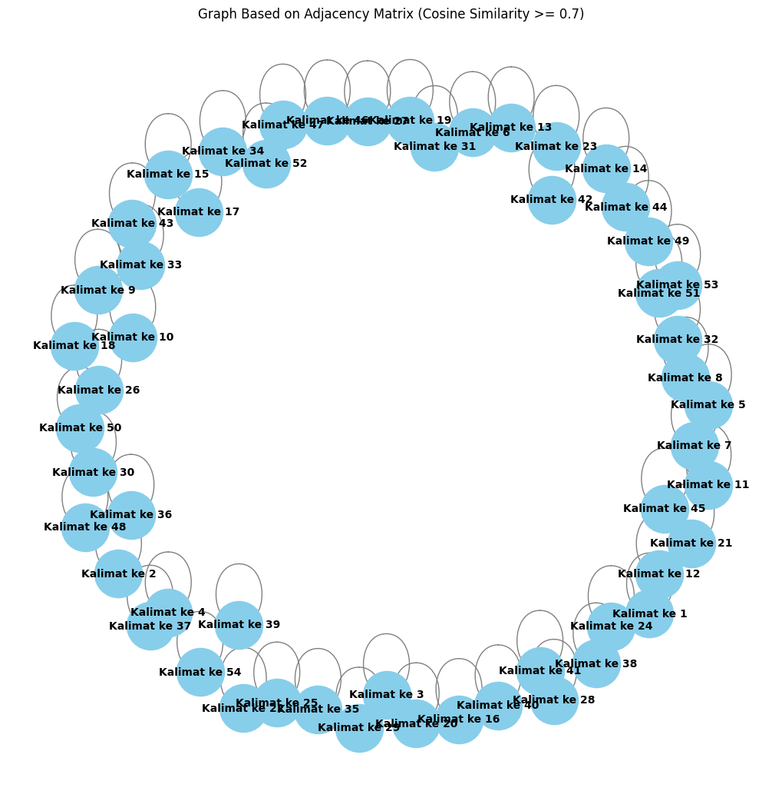

from google.colab import drive
drive.mount('/content/drive')
---------------------------------------------------------------------------
KeyboardInterrupt Traceback (most recent call last)
<ipython-input-1-d5df0069828e> in <cell line: 2>()
1 from google.colab import drive
----> 2 drive.mount('/content/drive')
/usr/local/lib/python3.10/dist-packages/google/colab/drive.py in mount(mountpoint, force_remount, timeout_ms, readonly)
98 def mount(mountpoint, force_remount=False, timeout_ms=120000, readonly=False):
99 """Mount your Google Drive at the specified mountpoint path."""
--> 100 return _mount(
101 mountpoint,
102 force_remount=force_remount,
/usr/local/lib/python3.10/dist-packages/google/colab/drive.py in _mount(mountpoint, force_remount, timeout_ms, ephemeral, readonly)
135 )
136 if ephemeral:
--> 137 _message.blocking_request(
138 'request_auth',
139 request={'authType': 'dfs_ephemeral'},
/usr/local/lib/python3.10/dist-packages/google/colab/_message.py in blocking_request(request_type, request, timeout_sec, parent)
174 request_type, request, parent=parent, expect_reply=True
175 )
--> 176 return read_reply_from_input(request_id, timeout_sec)
/usr/local/lib/python3.10/dist-packages/google/colab/_message.py in read_reply_from_input(message_id, timeout_sec)
94 reply = _read_next_input_message()
95 if reply == _NOT_READY or not isinstance(reply, dict):
---> 96 time.sleep(0.025)
97 continue
98 if (
KeyboardInterrupt:
cd /content/drive/MyDrive/PPW/tugas
/content/drive/MyDrive/PPW/tugas
!pip install Sastrawi
Collecting Sastrawi
Downloading Sastrawi-1.0.1-py2.py3-none-any.whl.metadata (909 bytes)
Downloading Sastrawi-1.0.1-py2.py3-none-any.whl (209 kB)
?25l ━━━━━━━━━━━━━━━━━━━━━━━━━━━━━━━━━━━━━━━━ 0.0/209.7 kB ? eta -:--:--
━━━━━━━━━━━━━━━━━━━━━━━━━━━━━━━━━━━━━━━━ 209.7/209.7 kB 7.3 MB/s eta 0:00:00
?25hInstalling collected packages: Sastrawi
Successfully installed Sastrawi-1.0.1
import pandas as pd
import numpy as np
import re
import nltk
from nltk.corpus import stopwords
#stemming
from Sastrawi.Stemmer.StemmerFactory import StemmerFactory
from sklearn.feature_extraction.text import TfidfVectorizer
from sklearn.metrics.pairwise import cosine_similarity
import nltk
from nltk.tokenize import sent_tokenize
import networkx as nx
import matplotlib.pyplot as plt
nltk.download('punkt')
[nltk_data] Downloading package punkt to /root/nltk_data...
[nltk_data] Unzipping tokenizers/punkt.zip.
True
# Path ke file di Google Drive (ubah sesuai lokasimu)
file_path = '/content/drive/MyDrive/PPW/tugas/satu-berita.csv'
# Baca file CSV
df = pd.read_csv(file_path)
df
| Judul Berita | Isi Berita | Tanggal Berita | Kategori Berita | |
|---|---|---|---|---|
| 0 | Analisis PPI: Di Tangan Presiden Prabowo, Indo... | TIMESINDONESIA, JAKARTA – Di bawah kepemimpina... | 04/09/2024 - 23:35 | Politik |
# Membuat list untuk menyimpan hasil
result_list = []
# Looping untuk memisahkan kalimat dari setiap berita
for index, row in df.iterrows():
sentences = row['Isi Berita'].split('.') # Pisahkan kalimat berdasarkan titik
sentences = [s.strip() for s in sentences if s.strip()] # Hilangkan spasi berlebih dan kosong
for i, sentence in enumerate(sentences, 1):
result_list.append({'kalimat ke n': f"Kalimat ke {i}", 'kalimat': sentence})
# Membuat DataFrame dari hasil pemisahan
result_df = pd.DataFrame(result_list)
# Tampilkan DataFrame
result_df
| kalimat ke n | kalimat | |
|---|---|---|
| 0 | Kalimat ke 1 | TIMESINDONESIA, JAKARTA – Di bawah kepemimpina... |
| 1 | Kalimat ke 2 | Hal itu dengan fokus pada kemandirian pangan d... |
| 2 | Kalimat ke 3 | Prabowo diharapkan mampu membawa Indonesia men... |
| 3 | Kalimat ke 4 | Advertisement\nDemikian itu analisis dari Ketu... |
| 4 | Kalimat ke 5 | ketika dimintai pendapatnya terkait prospek pe... |
| 5 | Kalimat ke 6 | Setelah dilantik sebagai Presiden Republik Ind... |
| 6 | Kalimat ke 7 | "Setelah 20 Oktober, Prabowo akan menjadi "med... |
| 7 | Kalimat ke 8 | Namanya akan harum dan popularitasnya mengalam... |
| 8 | Kalimat ke 9 | Membangun Demokrasi yang Sehat\nMuhlis menilai... |
| 9 | Kalimat ke 10 | Diberbagai kesempatan, Prabowo menegaskan pent... |
| 10 | Kalimat ke 11 | Dia mengapresiasi ungkapan Prabowo yang menyeb... |
| 11 | Kalimat ke 12 | "Itu berarti Prabowo mengacu pada pandangan de... |
| 12 | Kalimat ke 13 | Salah satu agenda penting dalam pemerintahan P... |
| 13 | Kalimat ke 14 | Di acara penutupan Kongres PAN, Prabowo meneka... |
| 14 | Kalimat ke 15 | "Jangan pakai alat-alat, cara-cara yang dulu-dulu |
| 15 | Kalimat ke 16 | Adu domba, ngintel-ngintelin orang |
| 16 | Kalimat ke 17 | Intel tuh rakyat untuk bangsa, jangan nginteli... |
| 17 | Kalimat ke 18 | Muhlis Ali menyebut pernyataan ini sebagai ang... |
| 18 | Kalimat ke 19 | Mantan Ketua PB HMI ini juga menekankan pentin... |
| 19 | Kalimat ke 20 | Ia mengingatkan bahwa dalam era kepemimpinan P... |
| 20 | Kalimat ke 21 | Pemerintah harus memastikan bahwa suara kritis... |
| 21 | Kalimat ke 22 | Menurutnya, menjaga kebebasan ini adalah kunci... |
| 22 | Kalimat ke 23 | Muhlis juga mengapresiasi upaya Prabowo dalam ... |
| 23 | Kalimat ke 24 | Menurutnya, meskipun semua kekuatan diajak bek... |
| 24 | Kalimat ke 25 | "Demokrasi harus ada oposisi untuk menjaga che... |
| 25 | Kalimat ke 26 | Namun, sebagai pihak oposisi, harus objektif d... |
| 26 | Kalimat ke 27 | Kemandirian Pangan dan Energi\nDalam konteks e... |
| 27 | Kalimat ke 28 | Pernyataan Prabowo yang menyebut Indonesia tid... |
| 28 | Kalimat ke 29 | Salah satu langkah konkret yang bisa diambil o... |
| 29 | Kalimat ke 30 | Langkah ini merupakan upaya nyata untuk mengur... |
| 30 | Kalimat ke 31 | Muhlis juga menyoroti keberanian Prabowo saat ... |
| 31 | Kalimat ke 32 | "Terima kasih kalian melarang kelapa sawit kam... |
| 32 | Kalimat ke 33 | Kami akan gunakan kelapa sawit kami untuk kepe... |
| 33 | Kalimat ke 34 | Bagi Muhlis, sikap ini patut diapresiasi karen... |
| 34 | Kalimat ke 35 | Transparansi dan Supremasi Hukum\nSelain itu, ... |
| 35 | Kalimat ke 36 | Rakyat perlu diyakinkan bahwa pemerintahan Pra... |
| 36 | Kalimat ke 37 | "Prabowo harus bisa menjaga integritas pemerin... |
| 37 | Kalimat ke 38 | Supremasi hukum juga menjadi sorotan utama |
| 38 | Kalimat ke 39 | Muhlis mengingatkan bahwa tanpa penegakan huku... |
| 39 | Kalimat ke 40 | Prabowo harus memastikan hukum ditegakkan tanp... |
| 40 | Kalimat ke 41 | Muhlis Ali juga menggarisbawahi komitmen Prabo... |
| 41 | Kalimat ke 42 | "Pernyataan Prabowo yang akan menyisihkan angg... |
| 42 | Kalimat ke 43 | Indonesia Menuju Macan Asia\nMuhlis Ali percay... |
| 43 | Kalimat ke 44 | Namun, untuk mewujudkan visi ini, Muhlis meneg... |
| 44 | Kalimat ke 45 | Selain itu, dukungan bagi Usaha Mikro, Kecil, ... |
| 45 | Kalimat ke 46 | Pengelolaan kebijakan fiskal yang efektif, ter... |
| 46 | Kalimat ke 47 | Di tengah dinamika global, Prabowo menegaskan ... |
| 47 | Kalimat ke 48 | Bagi Prabowo, demokrasi tidak harus ala Barat,... |
| 48 | Kalimat ke 49 | Muhlis menilai pandangan ini sangat relevan, t... |
| 49 | Kalimat ke 50 | Lima tahun ke depan adalah periode menentukan ... |
| 50 | Kalimat ke 51 | Muhlis Ali menegaskan bahwa Poros Pemuda Indon... |
| 51 | Kalimat ke 52 | "Ini adalah momen di mana kita bisa melakukan ... |
| 52 | Kalimat ke 53 | Kami di PPI akan terus mengawal dan memberikan... |
| 53 | Kalimat ke 54 | (*)**) Ikuti berita terbaru TIMES Indonesia di... |
# Download stopwords untuk bahasa Indonesia
nltk.download('stopwords')
stop_words = stopwords.words('indonesian')
# Fungsi preprocessing yang disesuaikan
def remove_url(data_berita):
url = re.compile(r'https?://\S+|www\.S+')
return url.sub(r'', data_berita)
def remove_html(data_berita):
html = re.compile(r'<.#?>')
return html.sub(r'', data_berita)
def remove_emoji(data_berita):
emoji_pattern = re.compile("["
u"\U0001F600-\U0001F64F" # emoticon
u"\U0001F300-\U0001F5FF" # symbols & pictographs
u"\U0001F680-\U0001F6FF" # transport & map symbols
u"\U0001F1E0-\U0001F1FF" # flags (iOS)
"]+", flags=re.UNICODE)
return emoji_pattern.sub(r'', data_berita)
def remove_numbers(data_berita):
data_berita = re.sub(r'\d+', '', data_berita)
return data_berita
def remove_symbols(data_berita):
data_berita = re.sub(r'[^a-zA-Z0-9\s]', '', data_berita)
return data_berita
def case_folding(text):
if isinstance(text, str):
return text.lower()
return text
def tokenize(text):
return text.split()
def remove_stopwords(text):
return [word for word in text if word not in stop_words]
# Inisialisasi stemmer
factory = StemmerFactory()
stemmer = factory.create_stemmer()
def stemming(text):
return [stemmer.stem(word) for word in text]
# Looping setiap kalimat di dataframe 'result_df'
result_df['clean'] = result_df['kalimat'].apply(remove_url)
result_df['clean'] = result_df['clean'].apply(remove_html)
result_df['clean'] = result_df['clean'].apply(remove_emoji)
result_df['clean'] = result_df['clean'].apply(remove_symbols)
result_df['clean'] = result_df['clean'].apply(remove_numbers)
result_df['clean'] = result_df['clean'].apply(case_folding)
result_df['tokenize'] = result_df['clean'].apply(tokenize)
result_df['stopword removal'] = result_df['tokenize'].apply(remove_stopwords)
result_df['stemming'] = result_df['stopword removal'].apply(stemming)
# Gabungkan kata setelah stemming
result_df['final'] = result_df['stemming'].apply(lambda x: ' '.join(x))
# Tampilkan hasil dataframe
result_df[['kalimat ke n', 'final']]
[nltk_data] Downloading package stopwords to /root/nltk_data...
[nltk_data] Package stopwords is already up-to-date!
| kalimat ke n | final | |
|---|---|---|
| 0 | Kalimat ke 1 | timesindonesia jakarta pimpin presiden ri prab... |
| 1 | Kalimat ke 2 | fokus mandiri pangan energi kuat ekonomi tega ... |
| 2 | Kalimat ke 3 | prabowo harap bawa indonesia era kuat regional... |
| 3 | Kalimat ke 4 | advertisement analisis ketua poros pemuda indo... |
| 4 | Kalimat ke 5 | dapat kait prospek perintah prabowo rabu muhli... |
| 5 | Kalimat ke 6 | lantik presiden republik indonesia oktober pra... |
| 6 | Kalimat ke 7 | oktober prabowo media darling simbol harap rakyat |
| 7 | Kalimat ke 8 | nama harum popularitas alami lonjak perintah k... |
| 8 | Kalimat ke 9 | bangun demokrasi sehat muhlis nilai prabowo mi... |
| 9 | Kalimat ke 10 | bagai sempat prabowo demokrasi sehat kelola ku... |
| 10 | Kalimat ke 11 | apresiasi ungkap prabowo sebut haus kuasa gang... |
| 11 | Kalimat ke 12 | prabowo acu pandang demokrasi modern kuasa tan... |
| 12 | Kalimat ke 13 | salah agenda perintah prabowo profesionalisme ... |
| 13 | Kalimat ke 14 | acara tutup kongres pan prabowo tekan intelije... |
| 14 | Kalimat ke 15 | pakai alatalat caracara duludulu |
| 15 | Kalimat ke 16 | adu domba ngintelngintelin orang |
| 16 | Kalimat ke 17 | intel tuh rakyat bangsa ngintelin lawan politi... |
| 17 | Kalimat ke 18 | muhlis ali sebut nyata angin segar demokrasi i... |
| 18 | Kalimat ke 19 | mantan ketua pb hmi tekan bebas ekspres bebas ... |
| 19 | Kalimat ke 20 | era pimpin prabowo kriminalisasi oposisi pers ... |
| 20 | Kalimat ke 21 | perintah suara kritis ruang bungkam beda pandang |
| 21 | Kalimat ke 22 | turut jaga bebas kunci bangun perintah buka tr... |
| 22 | Kalimat ke 23 | muhlis apresiasi upaya prabowo galang satu rek... |
| 23 | Kalimat ke 24 | turut kuat ajak imbang fungsi oposisi |
| 24 | Kalimat ke 25 | demokrasi oposisi jaga check and balance |
| 25 | Kalimat ke 26 | oposisi objektif beda dasar |
| 26 | Kalimat ke 27 | mandiri pangan energi konteks ekonomi prabowo ... |
| 27 | Kalimat ke 28 | nyata prabowo sebut indonesia takut negara man... |
| 28 | Kalimat ke 29 | salah langkah konkret ambil perintah selesai u... |
| 29 | Kalimat ke 30 | langkah upaya nyata kurang gantung bahan bakar... |
| 30 | Kalimat ke 31 | muhlis sorot berani prabowo hadap presiden pra... |
| 31 | Kalimat ke 32 | terima kasih larang kelapa sawit masuk eropa |
| 32 | Kalimat ke 33 | kelapa sawit penting rakyat swasembada energi ... |
| 33 | Kalimat ke 34 | muhlis sikap patut apresiasi teguh prabowo tah... |
| 34 | Kalimat ke 35 | transparansi supremasi hukum muhlis ali tekan ... |
| 35 | Kalimat ke 36 | rakyat yakin perintah prabowo benarbenar penti... |
| 36 | Kalimat ke 37 | prabowo jaga integritas perintah bersih bebas ... |
| 37 | Kalimat ke 38 | supremasi hukum sorot utama |
| 38 | Kalimat ke 39 | muhlis tega hukum adil sulit perintah bangun c... |
| 39 | Kalimat ke 40 | prabowo hukum tegak pandang bulu kunci jaga pe... |
| 40 | Kalimat ke 41 | muhlis ali menggarisbawahi komitmen prabowo be... |
| 41 | Kalimat ke 42 | nyata prabowo sisih anggar khusus berantas kor... |
| 42 | Kalimat ke 43 | indonesia macan asia muhlis ali percaya alam l... |
| 43 | Kalimat ke 44 | wujud visi muhlis kabinet solid orientasi ting... |
| 44 | Kalimat ke 45 | dukung usaha mikro tengah umkm kuat akses muda... |
| 45 | Kalimat ke 46 | kelola bijak fiskal efektif kurang pajak beri ... |
| 46 | Kalimat ke 47 | dinamika global prabowo demokrasi indonesia mi... |
| 47 | Kalimat ke 48 | prabowo demokrasi ala barat demokrasi indonesi... |
| 48 | Kalimat ke 49 | muhlis nilai pandang relevan standar ganda ter... |
| 49 | Kalimat ke 50 | periode tentu indonesia |
| 50 | Kalimat ke 51 | muhlis ali poros pemuda indonesia awal dukung ... |
| 51 | Kalimat ke 52 | momen lompat maju |
| 52 | Kalimat ke 53 | ppi awal dukung konstruktif perintah prabowo m... |
| 53 | Kalimat ke 54 | ikut berita baru times indonesia google news k... |
# Gabungkan semua kalimat hasil stemming menjadi dokumen untuk tiap kalimat
documents = result_df['final'].tolist()
# Inisialisasi TF-IDF Vectorizer
tfidf_vectorizer = TfidfVectorizer()
# Terapkan TF-IDF ke dokumen (kalimat yang sudah dipreproses)
tfidf_matrix = tfidf_vectorizer.fit_transform(documents)
# Mendapatkan nama-nama fitur (kata-kata)
feature_names = tfidf_vectorizer.get_feature_names_out()
# Mengubah hasil TF-IDF menjadi dataframe
tfidf_df = pd.DataFrame(tfidf_matrix.toarray(), columns=feature_names)
# Tambahkan kolom 'no' dan 'kalimat ke n' untuk identifikasi
tfidf_df.insert(0, 'kalimat ke n', result_df['kalimat ke n'])
# Tampilkan dataframe dengan skor TF-IDF
tfidf_df
| kalimat ke n | acara | acu | adil | adu | advertisement | agenda | ajak | akses | aktif | ... | ungkap | uni | upaya | usaha | utama | visi | waris | wibawa | wujud | yakin | |
|---|---|---|---|---|---|---|---|---|---|---|---|---|---|---|---|---|---|---|---|---|---|
| 0 | Kalimat ke 1 | 0.000000 | 0.000000 | 0.000000 | 0.0 | 0.000000 | 0.000000 | 0.000000 | 0.000000 | 0.00000 | ... | 0.000000 | 0.000000 | 0.000000 | 0.000000 | 0.000000 | 0.000000 | 0.000000 | 0.000000 | 0.000000 | 0.000000 |
| 1 | Kalimat ke 2 | 0.000000 | 0.000000 | 0.000000 | 0.0 | 0.000000 | 0.000000 | 0.000000 | 0.000000 | 0.00000 | ... | 0.000000 | 0.000000 | 0.000000 | 0.000000 | 0.000000 | 0.000000 | 0.000000 | 0.000000 | 0.000000 | 0.000000 |
| 2 | Kalimat ke 3 | 0.000000 | 0.000000 | 0.000000 | 0.0 | 0.000000 | 0.000000 | 0.000000 | 0.000000 | 0.00000 | ... | 0.000000 | 0.000000 | 0.000000 | 0.000000 | 0.000000 | 0.000000 | 0.000000 | 0.000000 | 0.000000 | 0.000000 |
| 3 | Kalimat ke 4 | 0.000000 | 0.000000 | 0.000000 | 0.0 | 0.402718 | 0.000000 | 0.000000 | 0.000000 | 0.00000 | ... | 0.000000 | 0.000000 | 0.000000 | 0.000000 | 0.000000 | 0.000000 | 0.000000 | 0.000000 | 0.000000 | 0.000000 |
| 4 | Kalimat ke 5 | 0.000000 | 0.000000 | 0.000000 | 0.0 | 0.000000 | 0.000000 | 0.000000 | 0.000000 | 0.00000 | ... | 0.000000 | 0.000000 | 0.000000 | 0.000000 | 0.000000 | 0.000000 | 0.000000 | 0.000000 | 0.000000 | 0.000000 |
| 5 | Kalimat ke 6 | 0.000000 | 0.000000 | 0.000000 | 0.0 | 0.000000 | 0.000000 | 0.000000 | 0.000000 | 0.00000 | ... | 0.000000 | 0.000000 | 0.000000 | 0.000000 | 0.000000 | 0.000000 | 0.000000 | 0.000000 | 0.244518 | 0.000000 |
| 6 | Kalimat ke 7 | 0.000000 | 0.000000 | 0.000000 | 0.0 | 0.000000 | 0.000000 | 0.000000 | 0.000000 | 0.00000 | ... | 0.000000 | 0.000000 | 0.000000 | 0.000000 | 0.000000 | 0.000000 | 0.000000 | 0.000000 | 0.000000 | 0.000000 |
| 7 | Kalimat ke 8 | 0.000000 | 0.000000 | 0.000000 | 0.0 | 0.000000 | 0.000000 | 0.000000 | 0.000000 | 0.00000 | ... | 0.000000 | 0.000000 | 0.000000 | 0.000000 | 0.000000 | 0.000000 | 0.000000 | 0.000000 | 0.000000 | 0.000000 |
| 8 | Kalimat ke 9 | 0.000000 | 0.000000 | 0.000000 | 0.0 | 0.000000 | 0.000000 | 0.000000 | 0.000000 | 0.00000 | ... | 0.000000 | 0.000000 | 0.000000 | 0.000000 | 0.000000 | 0.360486 | 0.000000 | 0.000000 | 0.000000 | 0.000000 |
| 9 | Kalimat ke 10 | 0.000000 | 0.000000 | 0.000000 | 0.0 | 0.000000 | 0.000000 | 0.000000 | 0.000000 | 0.00000 | ... | 0.000000 | 0.000000 | 0.000000 | 0.000000 | 0.000000 | 0.000000 | 0.000000 | 0.000000 | 0.000000 | 0.000000 |
| 10 | Kalimat ke 11 | 0.000000 | 0.000000 | 0.000000 | 0.0 | 0.000000 | 0.000000 | 0.000000 | 0.000000 | 0.00000 | ... | 0.381458 | 0.000000 | 0.000000 | 0.000000 | 0.000000 | 0.000000 | 0.000000 | 0.000000 | 0.000000 | 0.000000 |
| 11 | Kalimat ke 12 | 0.000000 | 0.341752 | 0.000000 | 0.0 | 0.000000 | 0.000000 | 0.000000 | 0.000000 | 0.00000 | ... | 0.000000 | 0.000000 | 0.000000 | 0.000000 | 0.000000 | 0.000000 | 0.000000 | 0.000000 | 0.000000 | 0.000000 |
| 12 | Kalimat ke 13 | 0.000000 | 0.000000 | 0.000000 | 0.0 | 0.000000 | 0.450757 | 0.000000 | 0.000000 | 0.00000 | ... | 0.000000 | 0.000000 | 0.000000 | 0.000000 | 0.000000 | 0.000000 | 0.000000 | 0.000000 | 0.000000 | 0.000000 |
| 13 | Kalimat ke 14 | 0.342713 | 0.000000 | 0.000000 | 0.0 | 0.000000 | 0.000000 | 0.000000 | 0.000000 | 0.00000 | ... | 0.000000 | 0.000000 | 0.000000 | 0.000000 | 0.000000 | 0.000000 | 0.000000 | 0.000000 | 0.000000 | 0.000000 |
| 14 | Kalimat ke 15 | 0.000000 | 0.000000 | 0.000000 | 0.0 | 0.000000 | 0.000000 | 0.000000 | 0.000000 | 0.00000 | ... | 0.000000 | 0.000000 | 0.000000 | 0.000000 | 0.000000 | 0.000000 | 0.000000 | 0.000000 | 0.000000 | 0.000000 |
| 15 | Kalimat ke 16 | 0.000000 | 0.000000 | 0.000000 | 0.5 | 0.000000 | 0.000000 | 0.000000 | 0.000000 | 0.00000 | ... | 0.000000 | 0.000000 | 0.000000 | 0.000000 | 0.000000 | 0.000000 | 0.000000 | 0.000000 | 0.000000 | 0.000000 |
| 16 | Kalimat ke 17 | 0.000000 | 0.000000 | 0.000000 | 0.0 | 0.000000 | 0.000000 | 0.000000 | 0.000000 | 0.00000 | ... | 0.000000 | 0.000000 | 0.000000 | 0.000000 | 0.000000 | 0.000000 | 0.000000 | 0.000000 | 0.000000 | 0.000000 |
| 17 | Kalimat ke 18 | 0.000000 | 0.000000 | 0.000000 | 0.0 | 0.000000 | 0.000000 | 0.000000 | 0.000000 | 0.00000 | ... | 0.000000 | 0.000000 | 0.000000 | 0.000000 | 0.000000 | 0.000000 | 0.000000 | 0.000000 | 0.000000 | 0.000000 |
| 18 | Kalimat ke 19 | 0.000000 | 0.000000 | 0.000000 | 0.0 | 0.000000 | 0.000000 | 0.000000 | 0.000000 | 0.00000 | ... | 0.000000 | 0.000000 | 0.000000 | 0.000000 | 0.000000 | 0.000000 | 0.000000 | 0.000000 | 0.000000 | 0.000000 |
| 19 | Kalimat ke 20 | 0.000000 | 0.000000 | 0.000000 | 0.0 | 0.000000 | 0.000000 | 0.000000 | 0.000000 | 0.00000 | ... | 0.000000 | 0.000000 | 0.000000 | 0.000000 | 0.000000 | 0.000000 | 0.000000 | 0.000000 | 0.000000 | 0.000000 |
| 20 | Kalimat ke 21 | 0.000000 | 0.000000 | 0.000000 | 0.0 | 0.000000 | 0.000000 | 0.000000 | 0.000000 | 0.00000 | ... | 0.000000 | 0.000000 | 0.000000 | 0.000000 | 0.000000 | 0.000000 | 0.000000 | 0.000000 | 0.000000 | 0.000000 |
| 21 | Kalimat ke 22 | 0.000000 | 0.000000 | 0.000000 | 0.0 | 0.000000 | 0.000000 | 0.000000 | 0.000000 | 0.28956 | ... | 0.000000 | 0.000000 | 0.000000 | 0.000000 | 0.000000 | 0.000000 | 0.000000 | 0.000000 | 0.000000 | 0.000000 |
| 22 | Kalimat ke 23 | 0.000000 | 0.000000 | 0.000000 | 0.0 | 0.000000 | 0.000000 | 0.000000 | 0.000000 | 0.00000 | ... | 0.000000 | 0.000000 | 0.410077 | 0.000000 | 0.000000 | 0.000000 | 0.000000 | 0.000000 | 0.000000 | 0.000000 |
| 23 | Kalimat ke 24 | 0.000000 | 0.000000 | 0.000000 | 0.0 | 0.000000 | 0.000000 | 0.465164 | 0.000000 | 0.00000 | ... | 0.000000 | 0.000000 | 0.000000 | 0.000000 | 0.000000 | 0.000000 | 0.000000 | 0.000000 | 0.000000 | 0.000000 |
| 24 | Kalimat ke 25 | 0.000000 | 0.000000 | 0.000000 | 0.0 | 0.000000 | 0.000000 | 0.000000 | 0.000000 | 0.00000 | ... | 0.000000 | 0.000000 | 0.000000 | 0.000000 | 0.000000 | 0.000000 | 0.000000 | 0.000000 | 0.000000 | 0.000000 |
| 25 | Kalimat ke 26 | 0.000000 | 0.000000 | 0.000000 | 0.0 | 0.000000 | 0.000000 | 0.000000 | 0.000000 | 0.00000 | ... | 0.000000 | 0.000000 | 0.000000 | 0.000000 | 0.000000 | 0.000000 | 0.000000 | 0.000000 | 0.000000 | 0.000000 |
| 26 | Kalimat ke 27 | 0.000000 | 0.000000 | 0.000000 | 0.0 | 0.000000 | 0.000000 | 0.000000 | 0.000000 | 0.00000 | ... | 0.000000 | 0.000000 | 0.000000 | 0.000000 | 0.244582 | 0.000000 | 0.000000 | 0.000000 | 0.000000 | 0.000000 |
| 27 | Kalimat ke 28 | 0.000000 | 0.000000 | 0.000000 | 0.0 | 0.000000 | 0.000000 | 0.000000 | 0.000000 | 0.00000 | ... | 0.000000 | 0.000000 | 0.000000 | 0.000000 | 0.000000 | 0.000000 | 0.000000 | 0.000000 | 0.000000 | 0.000000 |
| 28 | Kalimat ke 29 | 0.000000 | 0.000000 | 0.000000 | 0.0 | 0.000000 | 0.000000 | 0.000000 | 0.000000 | 0.00000 | ... | 0.000000 | 0.000000 | 0.000000 | 0.000000 | 0.000000 | 0.000000 | 0.000000 | 0.000000 | 0.000000 | 0.000000 |
| 29 | Kalimat ke 30 | 0.000000 | 0.000000 | 0.000000 | 0.0 | 0.000000 | 0.000000 | 0.000000 | 0.000000 | 0.00000 | ... | 0.000000 | 0.000000 | 0.302263 | 0.000000 | 0.000000 | 0.000000 | 0.000000 | 0.000000 | 0.000000 | 0.000000 |
| 30 | Kalimat ke 31 | 0.000000 | 0.000000 | 0.000000 | 0.0 | 0.000000 | 0.000000 | 0.000000 | 0.000000 | 0.00000 | ... | 0.000000 | 0.277074 | 0.000000 | 0.251033 | 0.000000 | 0.000000 | 0.000000 | 0.000000 | 0.000000 | 0.000000 |
| 31 | Kalimat ke 32 | 0.000000 | 0.000000 | 0.000000 | 0.0 | 0.000000 | 0.000000 | 0.000000 | 0.000000 | 0.00000 | ... | 0.000000 | 0.000000 | 0.000000 | 0.000000 | 0.000000 | 0.000000 | 0.000000 | 0.000000 | 0.000000 | 0.000000 |
| 32 | Kalimat ke 33 | 0.000000 | 0.000000 | 0.000000 | 0.0 | 0.000000 | 0.000000 | 0.000000 | 0.000000 | 0.00000 | ... | 0.000000 | 0.000000 | 0.000000 | 0.000000 | 0.000000 | 0.000000 | 0.000000 | 0.000000 | 0.000000 | 0.000000 |
| 33 | Kalimat ke 34 | 0.000000 | 0.000000 | 0.000000 | 0.0 | 0.000000 | 0.000000 | 0.000000 | 0.000000 | 0.00000 | ... | 0.000000 | 0.000000 | 0.000000 | 0.000000 | 0.000000 | 0.000000 | 0.000000 | 0.000000 | 0.000000 | 0.000000 |
| 34 | Kalimat ke 35 | 0.000000 | 0.000000 | 0.000000 | 0.0 | 0.000000 | 0.000000 | 0.000000 | 0.000000 | 0.00000 | ... | 0.000000 | 0.000000 | 0.000000 | 0.000000 | 0.000000 | 0.000000 | 0.000000 | 0.000000 | 0.000000 | 0.000000 |
| 35 | Kalimat ke 36 | 0.000000 | 0.000000 | 0.000000 | 0.0 | 0.000000 | 0.000000 | 0.000000 | 0.000000 | 0.00000 | ... | 0.000000 | 0.000000 | 0.000000 | 0.000000 | 0.000000 | 0.000000 | 0.000000 | 0.000000 | 0.000000 | 0.465032 |
| 36 | Kalimat ke 37 | 0.000000 | 0.000000 | 0.000000 | 0.0 | 0.000000 | 0.000000 | 0.000000 | 0.000000 | 0.00000 | ... | 0.000000 | 0.000000 | 0.000000 | 0.000000 | 0.000000 | 0.000000 | 0.000000 | 0.000000 | 0.000000 | 0.000000 |
| 37 | Kalimat ke 38 | 0.000000 | 0.000000 | 0.000000 | 0.0 | 0.000000 | 0.000000 | 0.000000 | 0.000000 | 0.00000 | ... | 0.000000 | 0.000000 | 0.000000 | 0.000000 | 0.521514 | 0.000000 | 0.000000 | 0.000000 | 0.000000 | 0.000000 |
| 38 | Kalimat ke 39 | 0.000000 | 0.000000 | 0.366626 | 0.0 | 0.000000 | 0.000000 | 0.000000 | 0.000000 | 0.00000 | ... | 0.000000 | 0.000000 | 0.000000 | 0.000000 | 0.000000 | 0.000000 | 0.000000 | 0.366626 | 0.000000 | 0.000000 |
| 39 | Kalimat ke 40 | 0.000000 | 0.000000 | 0.000000 | 0.0 | 0.000000 | 0.000000 | 0.000000 | 0.000000 | 0.00000 | ... | 0.000000 | 0.000000 | 0.000000 | 0.000000 | 0.000000 | 0.000000 | 0.000000 | 0.000000 | 0.000000 | 0.000000 |
| 40 | Kalimat ke 41 | 0.000000 | 0.000000 | 0.000000 | 0.0 | 0.000000 | 0.000000 | 0.000000 | 0.000000 | 0.00000 | ... | 0.000000 | 0.000000 | 0.000000 | 0.000000 | 0.000000 | 0.000000 | 0.000000 | 0.000000 | 0.000000 | 0.000000 |
| 41 | Kalimat ke 42 | 0.000000 | 0.000000 | 0.000000 | 0.0 | 0.000000 | 0.000000 | 0.000000 | 0.000000 | 0.00000 | ... | 0.000000 | 0.000000 | 0.000000 | 0.000000 | 0.000000 | 0.000000 | 0.000000 | 0.000000 | 0.000000 | 0.000000 |
| 42 | Kalimat ke 43 | 0.000000 | 0.000000 | 0.000000 | 0.0 | 0.000000 | 0.000000 | 0.000000 | 0.000000 | 0.00000 | ... | 0.000000 | 0.000000 | 0.000000 | 0.000000 | 0.000000 | 0.000000 | 0.000000 | 0.000000 | 0.000000 | 0.000000 |
| 43 | Kalimat ke 44 | 0.000000 | 0.000000 | 0.000000 | 0.0 | 0.000000 | 0.000000 | 0.000000 | 0.000000 | 0.00000 | ... | 0.000000 | 0.000000 | 0.000000 | 0.000000 | 0.000000 | 0.219377 | 0.000000 | 0.000000 | 0.219377 | 0.000000 |
| 44 | Kalimat ke 45 | 0.000000 | 0.000000 | 0.000000 | 0.0 | 0.000000 | 0.000000 | 0.000000 | 0.318377 | 0.00000 | ... | 0.000000 | 0.000000 | 0.000000 | 0.288454 | 0.000000 | 0.000000 | 0.000000 | 0.000000 | 0.000000 | 0.000000 |
| 45 | Kalimat ke 46 | 0.000000 | 0.000000 | 0.000000 | 0.0 | 0.000000 | 0.000000 | 0.000000 | 0.000000 | 0.00000 | ... | 0.000000 | 0.000000 | 0.000000 | 0.000000 | 0.000000 | 0.000000 | 0.000000 | 0.000000 | 0.000000 | 0.000000 |
| 46 | Kalimat ke 47 | 0.000000 | 0.000000 | 0.000000 | 0.0 | 0.000000 | 0.000000 | 0.000000 | 0.000000 | 0.00000 | ... | 0.000000 | 0.000000 | 0.000000 | 0.000000 | 0.000000 | 0.000000 | 0.271772 | 0.000000 | 0.000000 | 0.000000 |
| 47 | Kalimat ke 48 | 0.000000 | 0.000000 | 0.000000 | 0.0 | 0.000000 | 0.000000 | 0.000000 | 0.000000 | 0.00000 | ... | 0.000000 | 0.000000 | 0.000000 | 0.000000 | 0.000000 | 0.000000 | 0.000000 | 0.000000 | 0.000000 | 0.000000 |
| 48 | Kalimat ke 49 | 0.000000 | 0.280610 | 0.000000 | 0.0 | 0.000000 | 0.000000 | 0.000000 | 0.000000 | 0.00000 | ... | 0.000000 | 0.000000 | 0.000000 | 0.000000 | 0.000000 | 0.000000 | 0.000000 | 0.000000 | 0.000000 | 0.000000 |
| 49 | Kalimat ke 50 | 0.000000 | 0.000000 | 0.000000 | 0.0 | 0.000000 | 0.000000 | 0.000000 | 0.000000 | 0.00000 | ... | 0.000000 | 0.000000 | 0.000000 | 0.000000 | 0.000000 | 0.000000 | 0.000000 | 0.000000 | 0.000000 | 0.000000 |
| 50 | Kalimat ke 51 | 0.000000 | 0.000000 | 0.000000 | 0.0 | 0.000000 | 0.000000 | 0.000000 | 0.000000 | 0.00000 | ... | 0.000000 | 0.000000 | 0.000000 | 0.000000 | 0.000000 | 0.000000 | 0.000000 | 0.000000 | 0.000000 | 0.000000 |
| 51 | Kalimat ke 52 | 0.000000 | 0.000000 | 0.000000 | 0.0 | 0.000000 | 0.000000 | 0.000000 | 0.000000 | 0.00000 | ... | 0.000000 | 0.000000 | 0.000000 | 0.000000 | 0.000000 | 0.000000 | 0.000000 | 0.000000 | 0.000000 | 0.000000 |
| 52 | Kalimat ke 53 | 0.000000 | 0.000000 | 0.000000 | 0.0 | 0.000000 | 0.000000 | 0.000000 | 0.000000 | 0.00000 | ... | 0.000000 | 0.000000 | 0.000000 | 0.000000 | 0.000000 | 0.000000 | 0.000000 | 0.000000 | 0.000000 | 0.000000 |
| 53 | Kalimat ke 54 | 0.000000 | 0.000000 | 0.000000 | 0.0 | 0.000000 | 0.000000 | 0.000000 | 0.000000 | 0.00000 | ... | 0.000000 | 0.000000 | 0.000000 | 0.000000 | 0.000000 | 0.000000 | 0.000000 | 0.000000 | 0.000000 | 0.000000 |
54 rows × 328 columns
# Menghitung cosine similarity antar kalimat berdasarkan TF-IDF
cosine_sim = cosine_similarity(tfidf_matrix)
# Membuat dataframe untuk menyimpan hasil cosine similarity
cosine_sim_df = pd.DataFrame(cosine_sim, index=result_df['kalimat ke n'], columns=result_df['kalimat ke n'])
# Tampilkan matriks cosine similarity
cosine_sim_df
| kalimat ke n | Kalimat ke 1 | Kalimat ke 2 | Kalimat ke 3 | Kalimat ke 4 | Kalimat ke 5 | Kalimat ke 6 | Kalimat ke 7 | Kalimat ke 8 | Kalimat ke 9 | Kalimat ke 10 | ... | Kalimat ke 45 | Kalimat ke 46 | Kalimat ke 47 | Kalimat ke 48 | Kalimat ke 49 | Kalimat ke 50 | Kalimat ke 51 | Kalimat ke 52 | Kalimat ke 53 | Kalimat ke 54 |
|---|---|---|---|---|---|---|---|---|---|---|---|---|---|---|---|---|---|---|---|---|---|
| kalimat ke n | |||||||||||||||||||||
| Kalimat ke 1 | 1.000000 | 0.000000 | 0.044104 | 0.028218 | 0.043109 | 0.168503 | 0.017618 | 0.000000 | 0.087873 | 0.016758 | ... | 0.000000 | 0.000000 | 0.030005 | 0.037770 | 0.021702 | 0.048800 | 0.048205 | 0.0 | 0.019719 | 0.022090 |
| Kalimat ke 2 | 0.000000 | 1.000000 | 0.072688 | 0.000000 | 0.000000 | 0.000000 | 0.000000 | 0.000000 | 0.072396 | 0.000000 | ... | 0.057930 | 0.049381 | 0.000000 | 0.000000 | 0.000000 | 0.000000 | 0.000000 | 0.0 | 0.000000 | 0.000000 |
| Kalimat ke 3 | 0.044104 | 0.072688 | 1.000000 | 0.038737 | 0.059178 | 0.066862 | 0.167426 | 0.000000 | 0.089467 | 0.023005 | ... | 0.053962 | 0.000000 | 0.041189 | 0.051849 | 0.029791 | 0.066991 | 0.066174 | 0.0 | 0.027070 | 0.030324 |
| Kalimat ke 4 | 0.028218 | 0.000000 | 0.038737 | 1.000000 | 0.072050 | 0.052340 | 0.000000 | 0.081874 | 0.034837 | 0.000000 | ... | 0.000000 | 0.000000 | 0.026353 | 0.033174 | 0.057151 | 0.067534 | 0.443851 | 0.0 | 0.287960 | 0.030570 |
| Kalimat ke 5 | 0.043109 | 0.000000 | 0.059178 | 0.072050 | 1.000000 | 0.065353 | 0.023640 | 0.066545 | 0.055310 | 0.022486 | ... | 0.000000 | 0.000000 | 0.040259 | 0.050679 | 0.055412 | 0.065479 | 0.156388 | 0.0 | 0.129145 | 0.029640 |
| Kalimat ke 6 | 0.168503 | 0.000000 | 0.066862 | 0.052340 | 0.065353 | 1.000000 | 0.167408 | 0.000000 | 0.014883 | 0.015542 | ... | 0.000000 | 0.000000 | 0.045487 | 0.057260 | 0.040253 | 0.090516 | 0.073080 | 0.0 | 0.018288 | 0.040973 |
| Kalimat ke 7 | 0.017618 | 0.000000 | 0.167426 | 0.000000 | 0.023640 | 0.167408 | 1.000000 | 0.000000 | 0.024089 | 0.025155 | ... | 0.000000 | 0.000000 | 0.016454 | 0.020712 | 0.000000 | 0.000000 | 0.026435 | 0.0 | 0.029599 | 0.000000 |
| Kalimat ke 8 | 0.000000 | 0.000000 | 0.000000 | 0.081874 | 0.066545 | 0.000000 | 0.000000 | 1.000000 | 0.027407 | 0.000000 | ... | 0.000000 | 0.000000 | 0.000000 | 0.000000 | 0.021334 | 0.000000 | 0.133105 | 0.0 | 0.149040 | 0.000000 |
| Kalimat ke 9 | 0.087873 | 0.072396 | 0.089467 | 0.034837 | 0.055310 | 0.014883 | 0.024089 | 0.027407 | 1.000000 | 0.209513 | ... | 0.053745 | 0.000000 | 0.195506 | 0.192123 | 0.127948 | 0.000000 | 0.061849 | 0.0 | 0.069253 | 0.000000 |
| Kalimat ke 10 | 0.016758 | 0.000000 | 0.023005 | 0.000000 | 0.022486 | 0.015542 | 0.025155 | 0.000000 | 0.209513 | 1.000000 | ... | 0.000000 | 0.070690 | 0.111468 | 0.200625 | 0.000000 | 0.000000 | 0.025144 | 0.0 | 0.028154 | 0.000000 |
| Kalimat ke 11 | 0.015386 | 0.000000 | 0.021121 | 0.000000 | 0.020644 | 0.014269 | 0.023095 | 0.000000 | 0.115186 | 0.133621 | ... | 0.000000 | 0.000000 | 0.014369 | 0.018088 | 0.000000 | 0.000000 | 0.023085 | 0.0 | 0.025848 | 0.000000 |
| Kalimat ke 12 | 0.015214 | 0.000000 | 0.020885 | 0.033026 | 0.052435 | 0.060998 | 0.098727 | 0.025983 | 0.117107 | 0.198625 | ... | 0.000000 | 0.000000 | 0.101196 | 0.182139 | 0.193770 | 0.000000 | 0.058635 | 0.0 | 0.065654 | 0.000000 |
| Kalimat ke 13 | 0.018181 | 0.000000 | 0.024958 | 0.000000 | 0.080804 | 0.016861 | 0.027290 | 0.045772 | 0.024858 | 0.025958 | ... | 0.000000 | 0.000000 | 0.016979 | 0.021374 | 0.000000 | 0.000000 | 0.090358 | 0.0 | 0.101175 | 0.000000 |
| Kalimat ke 14 | 0.013823 | 0.000000 | 0.018976 | 0.000000 | 0.018547 | 0.012820 | 0.020749 | 0.000000 | 0.103487 | 0.019736 | ... | 0.000000 | 0.000000 | 0.012909 | 0.016250 | 0.000000 | 0.000000 | 0.020740 | 0.0 | 0.023223 | 0.000000 |
| Kalimat ke 15 | 0.000000 | 0.000000 | 0.000000 | 0.000000 | 0.000000 | 0.000000 | 0.000000 | 0.000000 | 0.000000 | 0.000000 | ... | 0.000000 | 0.000000 | 0.000000 | 0.000000 | 0.000000 | 0.000000 | 0.000000 | 0.0 | 0.000000 | 0.000000 |
| Kalimat ke 16 | 0.000000 | 0.000000 | 0.000000 | 0.000000 | 0.000000 | 0.000000 | 0.000000 | 0.000000 | 0.000000 | 0.000000 | ... | 0.000000 | 0.000000 | 0.000000 | 0.000000 | 0.000000 | 0.000000 | 0.000000 | 0.0 | 0.000000 | 0.000000 |
| Kalimat ke 17 | 0.014493 | 0.000000 | 0.019896 | 0.000000 | 0.019446 | 0.058107 | 0.094049 | 0.000000 | 0.108504 | 0.020693 | ... | 0.000000 | 0.000000 | 0.013535 | 0.017038 | 0.000000 | 0.000000 | 0.021746 | 0.0 | 0.024349 | 0.000000 |
| Kalimat ke 18 | 0.021059 | 0.000000 | 0.028908 | 0.106807 | 0.053769 | 0.039060 | 0.000000 | 0.061101 | 0.127466 | 0.105958 | ... | 0.000000 | 0.000000 | 0.158282 | 0.286493 | 0.042650 | 0.050399 | 0.115801 | 0.0 | 0.094285 | 0.022813 |
| Kalimat ke 19 | 0.000000 | 0.000000 | 0.000000 | 0.098372 | 0.000000 | 0.000000 | 0.000000 | 0.000000 | 0.133644 | 0.139559 | ... | 0.000000 | 0.000000 | 0.068625 | 0.129579 | 0.000000 | 0.000000 | 0.000000 | 0.0 | 0.000000 | 0.000000 |
| Kalimat ke 20 | 0.094331 | 0.000000 | 0.163709 | 0.000000 | 0.160014 | 0.015977 | 0.025859 | 0.000000 | 0.128974 | 0.024597 | ... | 0.000000 | 0.000000 | 0.016089 | 0.020253 | 0.000000 | 0.000000 | 0.025848 | 0.0 | 0.028942 | 0.000000 |
| Kalimat ke 21 | 0.000000 | 0.000000 | 0.000000 | 0.000000 | 0.052670 | 0.000000 | 0.000000 | 0.042737 | 0.000000 | 0.000000 | ... | 0.000000 | 0.000000 | 0.000000 | 0.000000 | 0.080862 | 0.000000 | 0.058898 | 0.0 | 0.065949 | 0.000000 |
| Kalimat ke 22 | 0.000000 | 0.000000 | 0.000000 | 0.000000 | 0.036237 | 0.000000 | 0.000000 | 0.029403 | 0.081163 | 0.000000 | ... | 0.000000 | 0.033341 | 0.000000 | 0.000000 | 0.000000 | 0.000000 | 0.040521 | 0.0 | 0.045372 | 0.000000 |
| Kalimat ke 23 | 0.018256 | 0.000000 | 0.025061 | 0.039629 | 0.062918 | 0.016931 | 0.027403 | 0.031177 | 0.064113 | 0.026065 | ... | 0.000000 | 0.000000 | 0.017049 | 0.021462 | 0.030478 | 0.000000 | 0.070357 | 0.0 | 0.078780 | 0.000000 |
| Kalimat ke 24 | 0.000000 | 0.084639 | 0.078841 | 0.000000 | 0.000000 | 0.000000 | 0.000000 | 0.000000 | 0.078525 | 0.000000 | ... | 0.062834 | 0.000000 | 0.000000 | 0.000000 | 0.000000 | 0.000000 | 0.000000 | 0.0 | 0.000000 | 0.000000 |
| Kalimat ke 25 | 0.000000 | 0.000000 | 0.000000 | 0.000000 | 0.000000 | 0.000000 | 0.000000 | 0.000000 | 0.079267 | 0.082775 | ... | 0.000000 | 0.054068 | 0.108287 | 0.204471 | 0.000000 | 0.000000 | 0.000000 | 0.0 | 0.000000 | 0.000000 |
| Kalimat ke 26 | 0.000000 | 0.000000 | 0.000000 | 0.000000 | 0.000000 | 0.000000 | 0.000000 | 0.000000 | 0.000000 | 0.000000 | ... | 0.000000 | 0.000000 | 0.000000 | 0.000000 | 0.000000 | 0.000000 | 0.000000 | 0.0 | 0.000000 | 0.000000 |
| Kalimat ke 27 | 0.010888 | 0.451101 | 0.014947 | 0.000000 | 0.014610 | 0.010098 | 0.016344 | 0.000000 | 0.014887 | 0.015546 | ... | 0.000000 | 0.070501 | 0.010169 | 0.012800 | 0.000000 | 0.000000 | 0.016337 | 0.0 | 0.018293 | 0.000000 |
| Kalimat ke 28 | 0.038284 | 0.243968 | 0.095602 | 0.046865 | 0.072930 | 0.052010 | 0.030753 | 0.017495 | 0.092857 | 0.029252 | ... | 0.034308 | 0.029245 | 0.035754 | 0.045008 | 0.036043 | 0.042591 | 0.081552 | 0.0 | 0.061417 | 0.019279 |
| Kalimat ke 29 | 0.000000 | 0.000000 | 0.000000 | 0.000000 | 0.035280 | 0.000000 | 0.000000 | 0.028626 | 0.000000 | 0.000000 | ... | 0.000000 | 0.000000 | 0.000000 | 0.000000 | 0.000000 | 0.000000 | 0.039451 | 0.0 | 0.044174 | 0.000000 |
| Kalimat ke 30 | 0.000000 | 0.079485 | 0.000000 | 0.000000 | 0.000000 | 0.000000 | 0.000000 | 0.000000 | 0.000000 | 0.000000 | ... | 0.000000 | 0.048713 | 0.000000 | 0.000000 | 0.000000 | 0.000000 | 0.000000 | 0.0 | 0.000000 | 0.086335 |
| Kalimat ke 31 | 0.087392 | 0.000000 | 0.041993 | 0.051127 | 0.153373 | 0.099054 | 0.016775 | 0.019086 | 0.039248 | 0.015956 | ... | 0.072412 | 0.000000 | 0.028568 | 0.035962 | 0.039320 | 0.046464 | 0.072200 | 0.0 | 0.048226 | 0.021032 |
| Kalimat ke 32 | 0.000000 | 0.000000 | 0.000000 | 0.000000 | 0.000000 | 0.000000 | 0.000000 | 0.000000 | 0.000000 | 0.000000 | ... | 0.000000 | 0.000000 | 0.000000 | 0.000000 | 0.000000 | 0.000000 | 0.000000 | 0.0 | 0.000000 | 0.000000 |
| Kalimat ke 33 | 0.019868 | 0.117360 | 0.027274 | 0.000000 | 0.026658 | 0.079657 | 0.128927 | 0.000000 | 0.027165 | 0.028367 | ... | 0.000000 | 0.000000 | 0.018555 | 0.023357 | 0.000000 | 0.000000 | 0.029810 | 0.0 | 0.033379 | 0.000000 |
| Kalimat ke 34 | 0.122062 | 0.063587 | 0.112196 | 0.064485 | 0.081436 | 0.058491 | 0.021158 | 0.024072 | 0.108496 | 0.020125 | ... | 0.047206 | 0.000000 | 0.036032 | 0.045358 | 0.049594 | 0.058604 | 0.091064 | 0.0 | 0.060827 | 0.026528 |
| Kalimat ke 35 | 0.000000 | 0.084009 | 0.000000 | 0.091120 | 0.074060 | 0.000000 | 0.000000 | 0.107491 | 0.030502 | 0.000000 | ... | 0.000000 | 0.000000 | 0.000000 | 0.000000 | 0.023743 | 0.000000 | 0.148137 | 0.0 | 0.165870 | 0.000000 |
| Kalimat ke 36 | 0.018757 | 0.000000 | 0.025748 | 0.000000 | 0.083363 | 0.075201 | 0.121715 | 0.047221 | 0.025645 | 0.026780 | ... | 0.000000 | 0.000000 | 0.017517 | 0.022050 | 0.000000 | 0.000000 | 0.093219 | 0.0 | 0.104379 | 0.000000 |
| Kalimat ke 37 | 0.019490 | 0.000000 | 0.026755 | 0.042308 | 0.127643 | 0.018075 | 0.029255 | 0.082352 | 0.068448 | 0.027827 | ... | 0.000000 | 0.055640 | 0.018202 | 0.022913 | 0.032538 | 0.000000 | 0.142734 | 0.0 | 0.159822 | 0.000000 |
| Kalimat ke 38 | 0.000000 | 0.137140 | 0.000000 | 0.000000 | 0.000000 | 0.000000 | 0.000000 | 0.000000 | 0.000000 | 0.000000 | ... | 0.000000 | 0.000000 | 0.000000 | 0.000000 | 0.000000 | 0.000000 | 0.000000 | 0.0 | 0.000000 | 0.000000 |
| Kalimat ke 39 | 0.000000 | 0.216415 | 0.000000 | 0.032100 | 0.077005 | 0.000000 | 0.000000 | 0.062483 | 0.134479 | 0.000000 | ... | 0.000000 | 0.000000 | 0.000000 | 0.000000 | 0.024687 | 0.000000 | 0.086109 | 0.0 | 0.096417 | 0.000000 |
| Kalimat ke 40 | 0.016504 | 0.097491 | 0.022656 | 0.000000 | 0.022145 | 0.066171 | 0.107100 | 0.000000 | 0.022566 | 0.023564 | ... | 0.000000 | 0.047116 | 0.015413 | 0.019403 | 0.078617 | 0.000000 | 0.024763 | 0.0 | 0.027728 | 0.000000 |
| Kalimat ke 41 | 0.043753 | 0.000000 | 0.060062 | 0.140840 | 0.092349 | 0.066330 | 0.023993 | 0.080569 | 0.056136 | 0.022822 | ... | 0.000000 | 0.000000 | 0.040861 | 0.051436 | 0.056240 | 0.066457 | 0.176682 | 0.0 | 0.151181 | 0.030083 |
| Kalimat ke 42 | 0.010773 | 0.000000 | 0.014788 | 0.000000 | 0.014455 | 0.009991 | 0.016170 | 0.000000 | 0.014729 | 0.015381 | ... | 0.052750 | 0.000000 | 0.010061 | 0.012665 | 0.000000 | 0.000000 | 0.088506 | 0.0 | 0.099101 | 0.000000 |
| Kalimat ke 43 | 0.311070 | 0.035471 | 0.156056 | 0.088183 | 0.074305 | 0.065256 | 0.023605 | 0.039633 | 0.119387 | 0.022452 | ... | 0.026333 | 0.000000 | 0.040199 | 0.097587 | 0.084737 | 0.065382 | 0.119203 | 0.0 | 0.087577 | 0.029596 |
| Kalimat ke 44 | 0.000000 | 0.057689 | 0.000000 | 0.021200 | 0.020555 | 0.053642 | 0.000000 | 0.016679 | 0.100028 | 0.000000 | ... | 0.000000 | 0.069076 | 0.000000 | 0.000000 | 0.016305 | 0.000000 | 0.022986 | 0.0 | 0.025737 | 0.000000 |
| Kalimat ke 45 | 0.000000 | 0.057930 | 0.053962 | 0.000000 | 0.000000 | 0.000000 | 0.000000 | 0.000000 | 0.053745 | 0.000000 | ... | 1.000000 | 0.000000 | 0.000000 | 0.000000 | 0.000000 | 0.000000 | 0.086233 | 0.0 | 0.096557 | 0.000000 |
| Kalimat ke 46 | 0.000000 | 0.049381 | 0.000000 | 0.000000 | 0.000000 | 0.000000 | 0.000000 | 0.000000 | 0.000000 | 0.070690 | ... | 0.000000 | 1.000000 | 0.000000 | 0.000000 | 0.000000 | 0.118492 | 0.000000 | 0.0 | 0.000000 | 0.000000 |
| Kalimat ke 47 | 0.030005 | 0.000000 | 0.041189 | 0.026353 | 0.040259 | 0.045487 | 0.016454 | 0.000000 | 0.195506 | 0.111468 | ... | 0.000000 | 0.000000 | 1.000000 | 0.424602 | 0.020268 | 0.045575 | 0.045019 | 0.0 | 0.018416 | 0.020630 |
| Kalimat ke 48 | 0.037770 | 0.000000 | 0.051849 | 0.033174 | 0.050679 | 0.057260 | 0.020712 | 0.000000 | 0.192123 | 0.200625 | ... | 0.000000 | 0.000000 | 0.424602 | 1.000000 | 0.100159 | 0.057370 | 0.056671 | 0.0 | 0.023182 | 0.025969 |
| Kalimat ke 49 | 0.021702 | 0.000000 | 0.029791 | 0.057151 | 0.055412 | 0.040253 | 0.000000 | 0.021334 | 0.127948 | 0.000000 | ... | 0.000000 | 0.000000 | 0.020268 | 0.100159 | 1.000000 | 0.051938 | 0.061963 | 0.0 | 0.032921 | 0.023510 |
| Kalimat ke 50 | 0.048800 | 0.000000 | 0.066991 | 0.067534 | 0.065479 | 0.090516 | 0.000000 | 0.000000 | 0.000000 | 0.000000 | ... | 0.000000 | 0.118492 | 0.045575 | 0.057370 | 0.051938 | 1.000000 | 0.073221 | 0.0 | 0.000000 | 0.052867 |
| Kalimat ke 51 | 0.048205 | 0.000000 | 0.066174 | 0.443851 | 0.156388 | 0.073080 | 0.026435 | 0.133105 | 0.061849 | 0.025144 | ... | 0.086233 | 0.000000 | 0.045019 | 0.056671 | 0.061963 | 0.073221 | 1.000000 | 0.0 | 0.717858 | 0.033144 |
| Kalimat ke 52 | 0.000000 | 0.000000 | 0.000000 | 0.000000 | 0.000000 | 0.000000 | 0.000000 | 0.000000 | 0.000000 | 0.000000 | ... | 0.000000 | 0.000000 | 0.000000 | 0.000000 | 0.000000 | 0.000000 | 0.000000 | 1.0 | 0.000000 | 0.000000 |
| Kalimat ke 53 | 0.019719 | 0.000000 | 0.027070 | 0.287960 | 0.129145 | 0.018288 | 0.029599 | 0.149040 | 0.069253 | 0.028154 | ... | 0.096557 | 0.000000 | 0.018416 | 0.023182 | 0.032921 | 0.000000 | 0.717858 | 0.0 | 1.000000 | 0.000000 |
| Kalimat ke 54 | 0.022090 | 0.000000 | 0.030324 | 0.030570 | 0.029640 | 0.040973 | 0.000000 | 0.000000 | 0.000000 | 0.000000 | ... | 0.000000 | 0.000000 | 0.020630 | 0.025969 | 0.023510 | 0.052867 | 0.033144 | 0.0 | 0.000000 | 1.000000 |
54 rows × 54 columns
# Tetapkan ambang batas (threshold) 0.7
threshold = 0.6
# Buat matriks adjacency: jika cosine similarity >= 0.6, maka 1; jika tidak, maka 0
adjacency_matrix = np.where(cosine_sim >= threshold, 1, 0)
# Buat dataframe untuk menampilkan matriks adjacency
adjacency_df = pd.DataFrame(adjacency_matrix, index=result_df['kalimat ke n'], columns=result_df['kalimat ke n'])
# Tampilkan matriks adjacency
adjacency_df
| kalimat ke n | Kalimat ke 1 | Kalimat ke 2 | Kalimat ke 3 | Kalimat ke 4 | Kalimat ke 5 | Kalimat ke 6 | Kalimat ke 7 | Kalimat ke 8 | Kalimat ke 9 | Kalimat ke 10 | ... | Kalimat ke 45 | Kalimat ke 46 | Kalimat ke 47 | Kalimat ke 48 | Kalimat ke 49 | Kalimat ke 50 | Kalimat ke 51 | Kalimat ke 52 | Kalimat ke 53 | Kalimat ke 54 |
|---|---|---|---|---|---|---|---|---|---|---|---|---|---|---|---|---|---|---|---|---|---|
| kalimat ke n | |||||||||||||||||||||
| Kalimat ke 1 | 1 | 0 | 0 | 0 | 0 | 0 | 0 | 0 | 0 | 0 | ... | 0 | 0 | 0 | 0 | 0 | 0 | 0 | 0 | 0 | 0 |
| Kalimat ke 2 | 0 | 1 | 0 | 0 | 0 | 0 | 0 | 0 | 0 | 0 | ... | 0 | 0 | 0 | 0 | 0 | 0 | 0 | 0 | 0 | 0 |
| Kalimat ke 3 | 0 | 0 | 1 | 0 | 0 | 0 | 0 | 0 | 0 | 0 | ... | 0 | 0 | 0 | 0 | 0 | 0 | 0 | 0 | 0 | 0 |
| Kalimat ke 4 | 0 | 0 | 0 | 1 | 0 | 0 | 0 | 0 | 0 | 0 | ... | 0 | 0 | 0 | 0 | 0 | 0 | 0 | 0 | 0 | 0 |
| Kalimat ke 5 | 0 | 0 | 0 | 0 | 1 | 0 | 0 | 0 | 0 | 0 | ... | 0 | 0 | 0 | 0 | 0 | 0 | 0 | 0 | 0 | 0 |
| Kalimat ke 6 | 0 | 0 | 0 | 0 | 0 | 1 | 0 | 0 | 0 | 0 | ... | 0 | 0 | 0 | 0 | 0 | 0 | 0 | 0 | 0 | 0 |
| Kalimat ke 7 | 0 | 0 | 0 | 0 | 0 | 0 | 1 | 0 | 0 | 0 | ... | 0 | 0 | 0 | 0 | 0 | 0 | 0 | 0 | 0 | 0 |
| Kalimat ke 8 | 0 | 0 | 0 | 0 | 0 | 0 | 0 | 1 | 0 | 0 | ... | 0 | 0 | 0 | 0 | 0 | 0 | 0 | 0 | 0 | 0 |
| Kalimat ke 9 | 0 | 0 | 0 | 0 | 0 | 0 | 0 | 0 | 1 | 0 | ... | 0 | 0 | 0 | 0 | 0 | 0 | 0 | 0 | 0 | 0 |
| Kalimat ke 10 | 0 | 0 | 0 | 0 | 0 | 0 | 0 | 0 | 0 | 1 | ... | 0 | 0 | 0 | 0 | 0 | 0 | 0 | 0 | 0 | 0 |
| Kalimat ke 11 | 0 | 0 | 0 | 0 | 0 | 0 | 0 | 0 | 0 | 0 | ... | 0 | 0 | 0 | 0 | 0 | 0 | 0 | 0 | 0 | 0 |
| Kalimat ke 12 | 0 | 0 | 0 | 0 | 0 | 0 | 0 | 0 | 0 | 0 | ... | 0 | 0 | 0 | 0 | 0 | 0 | 0 | 0 | 0 | 0 |
| Kalimat ke 13 | 0 | 0 | 0 | 0 | 0 | 0 | 0 | 0 | 0 | 0 | ... | 0 | 0 | 0 | 0 | 0 | 0 | 0 | 0 | 0 | 0 |
| Kalimat ke 14 | 0 | 0 | 0 | 0 | 0 | 0 | 0 | 0 | 0 | 0 | ... | 0 | 0 | 0 | 0 | 0 | 0 | 0 | 0 | 0 | 0 |
| Kalimat ke 15 | 0 | 0 | 0 | 0 | 0 | 0 | 0 | 0 | 0 | 0 | ... | 0 | 0 | 0 | 0 | 0 | 0 | 0 | 0 | 0 | 0 |
| Kalimat ke 16 | 0 | 0 | 0 | 0 | 0 | 0 | 0 | 0 | 0 | 0 | ... | 0 | 0 | 0 | 0 | 0 | 0 | 0 | 0 | 0 | 0 |
| Kalimat ke 17 | 0 | 0 | 0 | 0 | 0 | 0 | 0 | 0 | 0 | 0 | ... | 0 | 0 | 0 | 0 | 0 | 0 | 0 | 0 | 0 | 0 |
| Kalimat ke 18 | 0 | 0 | 0 | 0 | 0 | 0 | 0 | 0 | 0 | 0 | ... | 0 | 0 | 0 | 0 | 0 | 0 | 0 | 0 | 0 | 0 |
| Kalimat ke 19 | 0 | 0 | 0 | 0 | 0 | 0 | 0 | 0 | 0 | 0 | ... | 0 | 0 | 0 | 0 | 0 | 0 | 0 | 0 | 0 | 0 |
| Kalimat ke 20 | 0 | 0 | 0 | 0 | 0 | 0 | 0 | 0 | 0 | 0 | ... | 0 | 0 | 0 | 0 | 0 | 0 | 0 | 0 | 0 | 0 |
| Kalimat ke 21 | 0 | 0 | 0 | 0 | 0 | 0 | 0 | 0 | 0 | 0 | ... | 0 | 0 | 0 | 0 | 0 | 0 | 0 | 0 | 0 | 0 |
| Kalimat ke 22 | 0 | 0 | 0 | 0 | 0 | 0 | 0 | 0 | 0 | 0 | ... | 0 | 0 | 0 | 0 | 0 | 0 | 0 | 0 | 0 | 0 |
| Kalimat ke 23 | 0 | 0 | 0 | 0 | 0 | 0 | 0 | 0 | 0 | 0 | ... | 0 | 0 | 0 | 0 | 0 | 0 | 0 | 0 | 0 | 0 |
| Kalimat ke 24 | 0 | 0 | 0 | 0 | 0 | 0 | 0 | 0 | 0 | 0 | ... | 0 | 0 | 0 | 0 | 0 | 0 | 0 | 0 | 0 | 0 |
| Kalimat ke 25 | 0 | 0 | 0 | 0 | 0 | 0 | 0 | 0 | 0 | 0 | ... | 0 | 0 | 0 | 0 | 0 | 0 | 0 | 0 | 0 | 0 |
| Kalimat ke 26 | 0 | 0 | 0 | 0 | 0 | 0 | 0 | 0 | 0 | 0 | ... | 0 | 0 | 0 | 0 | 0 | 0 | 0 | 0 | 0 | 0 |
| Kalimat ke 27 | 0 | 0 | 0 | 0 | 0 | 0 | 0 | 0 | 0 | 0 | ... | 0 | 0 | 0 | 0 | 0 | 0 | 0 | 0 | 0 | 0 |
| Kalimat ke 28 | 0 | 0 | 0 | 0 | 0 | 0 | 0 | 0 | 0 | 0 | ... | 0 | 0 | 0 | 0 | 0 | 0 | 0 | 0 | 0 | 0 |
| Kalimat ke 29 | 0 | 0 | 0 | 0 | 0 | 0 | 0 | 0 | 0 | 0 | ... | 0 | 0 | 0 | 0 | 0 | 0 | 0 | 0 | 0 | 0 |
| Kalimat ke 30 | 0 | 0 | 0 | 0 | 0 | 0 | 0 | 0 | 0 | 0 | ... | 0 | 0 | 0 | 0 | 0 | 0 | 0 | 0 | 0 | 0 |
| Kalimat ke 31 | 0 | 0 | 0 | 0 | 0 | 0 | 0 | 0 | 0 | 0 | ... | 0 | 0 | 0 | 0 | 0 | 0 | 0 | 0 | 0 | 0 |
| Kalimat ke 32 | 0 | 0 | 0 | 0 | 0 | 0 | 0 | 0 | 0 | 0 | ... | 0 | 0 | 0 | 0 | 0 | 0 | 0 | 0 | 0 | 0 |
| Kalimat ke 33 | 0 | 0 | 0 | 0 | 0 | 0 | 0 | 0 | 0 | 0 | ... | 0 | 0 | 0 | 0 | 0 | 0 | 0 | 0 | 0 | 0 |
| Kalimat ke 34 | 0 | 0 | 0 | 0 | 0 | 0 | 0 | 0 | 0 | 0 | ... | 0 | 0 | 0 | 0 | 0 | 0 | 0 | 0 | 0 | 0 |
| Kalimat ke 35 | 0 | 0 | 0 | 0 | 0 | 0 | 0 | 0 | 0 | 0 | ... | 0 | 0 | 0 | 0 | 0 | 0 | 0 | 0 | 0 | 0 |
| Kalimat ke 36 | 0 | 0 | 0 | 0 | 0 | 0 | 0 | 0 | 0 | 0 | ... | 0 | 0 | 0 | 0 | 0 | 0 | 0 | 0 | 0 | 0 |
| Kalimat ke 37 | 0 | 0 | 0 | 0 | 0 | 0 | 0 | 0 | 0 | 0 | ... | 0 | 0 | 0 | 0 | 0 | 0 | 0 | 0 | 0 | 0 |
| Kalimat ke 38 | 0 | 0 | 0 | 0 | 0 | 0 | 0 | 0 | 0 | 0 | ... | 0 | 0 | 0 | 0 | 0 | 0 | 0 | 0 | 0 | 0 |
| Kalimat ke 39 | 0 | 0 | 0 | 0 | 0 | 0 | 0 | 0 | 0 | 0 | ... | 0 | 0 | 0 | 0 | 0 | 0 | 0 | 0 | 0 | 0 |
| Kalimat ke 40 | 0 | 0 | 0 | 0 | 0 | 0 | 0 | 0 | 0 | 0 | ... | 0 | 0 | 0 | 0 | 0 | 0 | 0 | 0 | 0 | 0 |
| Kalimat ke 41 | 0 | 0 | 0 | 0 | 0 | 0 | 0 | 0 | 0 | 0 | ... | 0 | 0 | 0 | 0 | 0 | 0 | 0 | 0 | 0 | 0 |
| Kalimat ke 42 | 0 | 0 | 0 | 0 | 0 | 0 | 0 | 0 | 0 | 0 | ... | 0 | 0 | 0 | 0 | 0 | 0 | 0 | 0 | 0 | 0 |
| Kalimat ke 43 | 0 | 0 | 0 | 0 | 0 | 0 | 0 | 0 | 0 | 0 | ... | 0 | 0 | 0 | 0 | 0 | 0 | 0 | 0 | 0 | 0 |
| Kalimat ke 44 | 0 | 0 | 0 | 0 | 0 | 0 | 0 | 0 | 0 | 0 | ... | 0 | 0 | 0 | 0 | 0 | 0 | 0 | 0 | 0 | 0 |
| Kalimat ke 45 | 0 | 0 | 0 | 0 | 0 | 0 | 0 | 0 | 0 | 0 | ... | 1 | 0 | 0 | 0 | 0 | 0 | 0 | 0 | 0 | 0 |
| Kalimat ke 46 | 0 | 0 | 0 | 0 | 0 | 0 | 0 | 0 | 0 | 0 | ... | 0 | 1 | 0 | 0 | 0 | 0 | 0 | 0 | 0 | 0 |
| Kalimat ke 47 | 0 | 0 | 0 | 0 | 0 | 0 | 0 | 0 | 0 | 0 | ... | 0 | 0 | 1 | 0 | 0 | 0 | 0 | 0 | 0 | 0 |
| Kalimat ke 48 | 0 | 0 | 0 | 0 | 0 | 0 | 0 | 0 | 0 | 0 | ... | 0 | 0 | 0 | 1 | 0 | 0 | 0 | 0 | 0 | 0 |
| Kalimat ke 49 | 0 | 0 | 0 | 0 | 0 | 0 | 0 | 0 | 0 | 0 | ... | 0 | 0 | 0 | 0 | 1 | 0 | 0 | 0 | 0 | 0 |
| Kalimat ke 50 | 0 | 0 | 0 | 0 | 0 | 0 | 0 | 0 | 0 | 0 | ... | 0 | 0 | 0 | 0 | 0 | 1 | 0 | 0 | 0 | 0 |
| Kalimat ke 51 | 0 | 0 | 0 | 0 | 0 | 0 | 0 | 0 | 0 | 0 | ... | 0 | 0 | 0 | 0 | 0 | 0 | 1 | 0 | 1 | 0 |
| Kalimat ke 52 | 0 | 0 | 0 | 0 | 0 | 0 | 0 | 0 | 0 | 0 | ... | 0 | 0 | 0 | 0 | 0 | 0 | 0 | 1 | 0 | 0 |
| Kalimat ke 53 | 0 | 0 | 0 | 0 | 0 | 0 | 0 | 0 | 0 | 0 | ... | 0 | 0 | 0 | 0 | 0 | 0 | 1 | 0 | 1 | 0 |
| Kalimat ke 54 | 0 | 0 | 0 | 0 | 0 | 0 | 0 | 0 | 0 | 0 | ... | 0 | 0 | 0 | 0 | 0 | 0 | 0 | 0 | 0 | 1 |
54 rows × 54 columns
# Buat graf dari matriks adjacency
G = nx.from_numpy_array(adjacency_matrix)
# Atur label node agar sesuai dengan 'kalimat ke n'
mapping = {i: f"Kalimat ke {i+1}" for i in range(len(result_df))}
G = nx.relabel_nodes(G, mapping)
# Menggambar graf
plt.figure(figsize=(10, 10))
pos = nx.spring_layout(G) # Atur layout graf
nx.draw(G, pos, with_labels=True, node_color='skyblue', node_size=2000, font_size=10, font_color='black', edge_color='gray', linewidths=1, font_weight='bold')
# Tampilkan graf
plt.title("Graph Based on Adjacency Matrix (Cosine Similarity >= 0.7)")
plt.show()

# Menghitung betweenness centrality
betweenness_centrality = nx.betweenness_centrality(G)
# Menghitung degree centrality
degree_centrality = nx.degree_centrality(G)
# Menghitung closeness centrality
closeness_centrality = nx.closeness_centrality(G)
# Buat dataframe untuk menampilkan hasil centrality
centrality_df = pd.DataFrame({
'Kalimat': list(betweenness_centrality.keys()),
'Betweenness Centrality': list(betweenness_centrality.values()),
'Degree Centrality': list(degree_centrality.values()),
'Closeness Centrality': list(closeness_centrality.values())
})
# Tampilkan dataframe centrality
centrality_df
| Kalimat | Betweenness Centrality | Degree Centrality | Closeness Centrality | |
|---|---|---|---|---|
| 0 | Kalimat ke 1 | 0.0 | 0.037736 | 0.000000 |
| 1 | Kalimat ke 2 | 0.0 | 0.037736 | 0.000000 |
| 2 | Kalimat ke 3 | 0.0 | 0.037736 | 0.000000 |
| 3 | Kalimat ke 4 | 0.0 | 0.037736 | 0.000000 |
| 4 | Kalimat ke 5 | 0.0 | 0.037736 | 0.000000 |
| 5 | Kalimat ke 6 | 0.0 | 0.037736 | 0.000000 |
| 6 | Kalimat ke 7 | 0.0 | 0.037736 | 0.000000 |
| 7 | Kalimat ke 8 | 0.0 | 0.037736 | 0.000000 |
| 8 | Kalimat ke 9 | 0.0 | 0.037736 | 0.000000 |
| 9 | Kalimat ke 10 | 0.0 | 0.037736 | 0.000000 |
| 10 | Kalimat ke 11 | 0.0 | 0.037736 | 0.000000 |
| 11 | Kalimat ke 12 | 0.0 | 0.037736 | 0.000000 |
| 12 | Kalimat ke 13 | 0.0 | 0.037736 | 0.000000 |
| 13 | Kalimat ke 14 | 0.0 | 0.037736 | 0.000000 |
| 14 | Kalimat ke 15 | 0.0 | 0.037736 | 0.000000 |
| 15 | Kalimat ke 16 | 0.0 | 0.037736 | 0.000000 |
| 16 | Kalimat ke 17 | 0.0 | 0.037736 | 0.000000 |
| 17 | Kalimat ke 18 | 0.0 | 0.037736 | 0.000000 |
| 18 | Kalimat ke 19 | 0.0 | 0.037736 | 0.000000 |
| 19 | Kalimat ke 20 | 0.0 | 0.037736 | 0.000000 |
| 20 | Kalimat ke 21 | 0.0 | 0.037736 | 0.000000 |
| 21 | Kalimat ke 22 | 0.0 | 0.037736 | 0.000000 |
| 22 | Kalimat ke 23 | 0.0 | 0.037736 | 0.000000 |
| 23 | Kalimat ke 24 | 0.0 | 0.037736 | 0.000000 |
| 24 | Kalimat ke 25 | 0.0 | 0.037736 | 0.000000 |
| 25 | Kalimat ke 26 | 0.0 | 0.037736 | 0.000000 |
| 26 | Kalimat ke 27 | 0.0 | 0.037736 | 0.000000 |
| 27 | Kalimat ke 28 | 0.0 | 0.037736 | 0.000000 |
| 28 | Kalimat ke 29 | 0.0 | 0.037736 | 0.000000 |
| 29 | Kalimat ke 30 | 0.0 | 0.037736 | 0.000000 |
| 30 | Kalimat ke 31 | 0.0 | 0.037736 | 0.000000 |
| 31 | Kalimat ke 32 | 0.0 | 0.037736 | 0.000000 |
| 32 | Kalimat ke 33 | 0.0 | 0.037736 | 0.000000 |
| 33 | Kalimat ke 34 | 0.0 | 0.037736 | 0.000000 |
| 34 | Kalimat ke 35 | 0.0 | 0.037736 | 0.000000 |
| 35 | Kalimat ke 36 | 0.0 | 0.037736 | 0.000000 |
| 36 | Kalimat ke 37 | 0.0 | 0.037736 | 0.000000 |
| 37 | Kalimat ke 38 | 0.0 | 0.037736 | 0.000000 |
| 38 | Kalimat ke 39 | 0.0 | 0.037736 | 0.000000 |
| 39 | Kalimat ke 40 | 0.0 | 0.037736 | 0.000000 |
| 40 | Kalimat ke 41 | 0.0 | 0.037736 | 0.000000 |
| 41 | Kalimat ke 42 | 0.0 | 0.037736 | 0.000000 |
| 42 | Kalimat ke 43 | 0.0 | 0.037736 | 0.000000 |
| 43 | Kalimat ke 44 | 0.0 | 0.037736 | 0.000000 |
| 44 | Kalimat ke 45 | 0.0 | 0.037736 | 0.000000 |
| 45 | Kalimat ke 46 | 0.0 | 0.037736 | 0.000000 |
| 46 | Kalimat ke 47 | 0.0 | 0.037736 | 0.000000 |
| 47 | Kalimat ke 48 | 0.0 | 0.037736 | 0.000000 |
| 48 | Kalimat ke 49 | 0.0 | 0.037736 | 0.000000 |
| 49 | Kalimat ke 50 | 0.0 | 0.037736 | 0.000000 |
| 50 | Kalimat ke 51 | 0.0 | 0.056604 | 0.018868 |
| 51 | Kalimat ke 52 | 0.0 | 0.037736 | 0.000000 |
| 52 | Kalimat ke 53 | 0.0 | 0.056604 | 0.018868 |
| 53 | Kalimat ke 54 | 0.0 | 0.037736 | 0.000000 |
import pandas as pd
import numpy as np
import re
import nltk
from nltk.corpus import stopwords
from nltk.tokenize import word_tokenize
from Sastrawi.Stemmer.StemmerFactory import StemmerFactory
from sklearn.feature_extraction.text import TfidfVectorizer
from sklearn.metrics.pairwise import cosine_similarity
import networkx as nx
import matplotlib.pyplot as plt
# Pastikan untuk mengunduh stopwords untuk bahasa Indonesia
nltk.download('stopwords')
stop_words = stopwords.words('indonesian')
# Fungsi untuk memisahkan dan memproses berita
def process_news_input(user_input):
# Memisahkan kalimat
result_list = []
sentences = user_input.split('.') # Pisahkan kalimat berdasarkan titik
sentences = [s.strip() for s in sentences if s.strip()] # Hilangkan spasi berlebih dan kosong
for i, sentence in enumerate(sentences, 1):
result_list.append({'kalimat ke n': f"Kalimat ke {i}", 'kalimat': sentence})
result_df = pd.DataFrame(result_list)
# Fungsi preprocessing yang disesuaikan
def remove_url(data_berita):
url = re.compile(r'https?://\S+|www\.S+')
return url.sub(r'', data_berita)
def remove_html(data_berita):
html = re.compile(r'<.#?>')
return html.sub(r'', data_berita)
def remove_emoji(data_berita):
emoji_pattern = re.compile("["u"\U0001F600-\U0001F64F"
u"\U0001F300-\U0001F5FF"
u"\U0001F680-\U0001F6FF"
u"\U0001F1E0-\U0001F1FF""]+", flags=re.UNICODE)
return emoji_pattern.sub(r'', data_berita)
def remove_numbers(data_berita):
data_berita = re.sub(r'\d+', '', data_berita)
return data_berita
def remove_symbols(data_berita):
data_berita = re.sub(r'[^a-zA-Z0-9\s]', '', data_berita)
return data_berita
def case_folding(text):
if isinstance(text, str):
return text.lower()
return text
def tokenize(text):
return text.split()
def remove_stopwords(text):
return [word for word in text if word not in stop_words]
# Inisialisasi stemmer
factory = StemmerFactory()
stemmer = factory.create_stemmer()
def stemming(text):
return [stemmer.stem(word) for word in text]
# Looping setiap kalimat di dataframe 'result_df'
result_df['clean'] = result_df['kalimat'].apply(remove_url)
result_df['clean'] = result_df['clean'].apply(remove_html)
result_df['clean'] = result_df['clean'].apply(remove_emoji)
result_df['clean'] = result_df['clean'].apply(remove_symbols)
result_df['clean'] = result_df['clean'].apply(remove_numbers)
result_df['clean'] = result_df['clean'].apply(case_folding)
result_df['tokenize'] = result_df['clean'].apply(tokenize)
result_df['stopword removal'] = result_df['tokenize'].apply(remove_stopwords)
result_df['stemming'] = result_df['stopword removal'].apply(stemming)
# Gabungkan kata setelah stemming
result_df['final'] = result_df['stemming'].apply(lambda x: ' '.join(x))
# TF-IDF
vectorizer = TfidfVectorizer()
tfidf_matrix = vectorizer.fit_transform(result_df['final'])
# Cosine similarity
cosine_sim = cosine_similarity(tfidf_matrix)
# Matriks adjacency
threshold = 0.6
adjacency_matrix = np.where(cosine_sim >= threshold, 1, 0)
# Buat graf dari matriks adjacency
G = nx.from_numpy_array(adjacency_matrix)
# Atur label node
mapping = {i: f"Kalimat ke {i+1}" for i in range(len(result_df))}
G = nx.relabel_nodes(G, mapping)
# Hitung centrality
betweenness_centrality = nx.betweenness_centrality(G)
degree_centrality = nx.degree_centrality(G)
closeness_centrality = nx.closeness_centrality(G)
# Buat dataframe untuk centrality
centrality_df = pd.DataFrame({
'Kalimat': list(betweenness_centrality.keys()),
'Betweenness Centrality': list(betweenness_centrality.values()),
'Degree Centrality': list(degree_centrality.values()),
'Closeness Centrality': list(closeness_centrality.values())
})
return result_df[['kalimat ke n', 'kalimat', 'final']], cosine_sim, adjacency_matrix, G, centrality_df
# Input dari pengguna
user_input = input("Masukkan isi berita: ")
# Proses berita dan ambil hasil
result_df, cosine_sim, adjacency_matrix, G, centrality_df = process_news_input(user_input)
# Pilih jenis centrality untuk dihitung
print("\nPilih jenis centrality yang ingin dihitung:")
print("1. Betweenness Centrality")
print("2. Degree Centrality")
print("3. Closeness Centrality")
choice = int(input("Masukkan pilihan (1/2/3): "))
# Ambil centrality sesuai pilihan
if choice == 1:
centrality_values = centrality_df[['Kalimat', 'Betweenness Centrality']]
centrality_name = 'Betweenness Centrality'
elif choice == 2:
centrality_values = centrality_df[['Kalimat', 'Degree Centrality']]
centrality_name = 'Degree Centrality'
elif choice == 3:
centrality_values = centrality_df[['Kalimat', 'Closeness Centrality']]
centrality_name = 'Closeness Centrality'
else:
print("Pilihan tidak valid.")
exit()
# Ringkasan: 3 kalimat dengan centrality tertinggi
top_sentences = centrality_values.nlargest(3, centrality_name)
# Tampilkan hasil
print("\nHasil Pemisahan Kalimat:")
print(result_df)
print("\nCosine Similarity Matrix:")
print(cosine_sim)
print("\nAdjacency Matrix:")
print(adjacency_matrix)
print("\nGraph:")
plt.figure(figsize=(5, 5))
pos = nx.spring_layout(G)
nx.draw(G, pos, with_labels=True, node_color='skyblue', node_size=2000, font_size=10, font_color='black', edge_color='gray', linewidths=1, font_weight='bold')
plt.title("Graph Based on Adjacency Matrix")
plt.show()
print("\nNilai Centrality:")
print(centrality_df)
print(f"\nRingkasan (3 Kalimat Teratas Berdasarkan {centrality_name}):")
print(top_sentences)
[nltk_data] Downloading package stopwords to /root/nltk_data...
[nltk_data] Package stopwords is already up-to-date!
Masukkan isi berita: Dengan penampilan tari yang penuh energi dan sketsa komedi yang kocak, Madam O berhasil memikat hati para penggemar dengan variasi kontennya yang tak pernah membosankan. Konten kreator berbakat ini memang jago menggabungkan tren musik terbaru dengan tantangan tari yang hits. Setiap video yang diunggah adalah sajian unik yang tak hanya menghibur, tetapi juga menyegarkan pikiran. “Kami juga menunjukkan bakat komedi yang mampu membuat penonton tertawa,” ungkap admin Madam O, menambahkan sentuhan humor yang kental dalam setiap karya. Namun, daya tarik Madam O tidak hanya terletak pada kontennya. Sosok karismatik di balik Kana Entertainment ini berhasil menciptakan hubungan yang hangat dengan pengikutnya. Melalui interaksi langsung di kolom komentar dan tantangan seru, Madam O berhasil membuat penggemarnya merasa dekat dan akrab, menjadikannya lebih dari sekadar seorang kreator konten. Dia adalah teman. Lebih dari itu, Kana Entertainment juga menciptakan komunitas yang kuat. Madam O tak segan-segan merespons komentar dan melibatkan penggemarnya dalam konten yang dihasilkan. Rasa kebersamaan dan keterlibatan yang tercipta membuat para pengikut merasa memiliki bagian dalam setiap video yang diproduksi. Dengan pertumbuhan yang pesat dan dukungan dari komunitas loyal, masa depan Kana Entertainment tampak sangat cerah. “Kami siap untuk terus berinovasi dan membawa lebih banyak kebahagiaan bagi semua,” tuturnya, Minggu (6/10/2024). Kombinasi antara kreativitas, keaslian, dan interaksi yang tulus inilah yang menjadi resep kesuksesan Madam O. Kana Entertainment adalah bukti, dengan sentuhan pribadi dan konten yang beragam, seseorang bisa menciptakan dampak yang besar di dunia hiburan digital. Jadi, tunggu apa lagi? Ayo ikuti keseruan Madam O dan nikmati setiap detik kontennya yang menghibur melalui akun media sosialnya di Instagram @madam_o_original dan Tiktok @kana_entertainment.
Pilih jenis centrality yang ingin dihitung:
1. Betweenness Centrality
2. Degree Centrality
3. Closeness Centrality
Masukkan pilihan (1/2/3): 3
Hasil Pemisahan Kalimat:
kalimat ke n kalimat \
0 Kalimat ke 1 Dengan penampilan tari yang penuh energi dan s...
1 Kalimat ke 2 Konten kreator berbakat ini memang jago mengga...
2 Kalimat ke 3 Setiap video yang diunggah adalah sajian unik ...
3 Kalimat ke 4 “Kami juga menunjukkan bakat komedi yang mampu...
4 Kalimat ke 5 Namun, daya tarik Madam O tidak hanya terletak...
5 Kalimat ke 6 Sosok karismatik di balik Kana Entertainment i...
6 Kalimat ke 7 Melalui interaksi langsung di kolom komentar d...
7 Kalimat ke 8 Dia adalah teman
8 Kalimat ke 9 Lebih dari itu, Kana Entertainment juga mencip...
9 Kalimat ke 10 Madam O tak segan-segan merespons komentar dan...
10 Kalimat ke 11 Rasa kebersamaan dan keterlibatan yang tercipt...
11 Kalimat ke 12 Dengan pertumbuhan yang pesat dan dukungan dar...
12 Kalimat ke 13 “Kami siap untuk terus berinovasi dan membawa ...
13 Kalimat ke 14 Kombinasi antara kreativitas, keaslian, dan in...
14 Kalimat ke 15 Kana Entertainment adalah bukti, dengan sentuh...
15 Kalimat ke 16 Jadi, tunggu apa lagi? Ayo ikuti keseruan Mada...
final
0 tampil tari penuh energi sketsa komedi kocak m...
1 konten kreator bakat jago gabung tren musik ba...
2 video unggah saji unik hibur segar pikir
3 bakat komedi tonton tertawa admin madam o sent...
4 daya tarik madam o letak konten
5 sosok karismatik kana entertainment hasil cipt...
6 interaksi langsung kolom komentar tantang seru...
7 teman
8 kana entertainment cipta komunitas kuat
9 madam o segansegan respons komentar libat gema...
10 sama libat cipta ikut milik video produksi
11 tumbuh pesat dukung komunitas loyal kana enter...
12 inovasi bawa bahagia minggu
13 kombinasi kreativitas asli interaksi tulus res...
14 kana entertainment bukti sentuh pribadi konten...
15 tunggu ayo ikut seru madam o nikmat detik kont...
Cosine Similarity Matrix:
[[1. 0.1000383 0. 0.10436252 0.09363813 0.05572279
0.16040809 0. 0. 0.21606998 0. 0.
0. 0.03351882 0.02941275 0.04834164]
[0.1000383 1. 0. 0.08466042 0.0536016 0.
0.19383417 0. 0. 0.04453542 0. 0.
0. 0. 0.03367369 0.02767237]
[0. 0. 1. 0. 0. 0.
0. 0. 0. 0. 0.12673695 0.
0. 0. 0.07942661 0.06527122]
[0.10436252 0.08466042 0. 1. 0.05591857 0.
0.03449179 0. 0. 0.0464605 0. 0.
0. 0.04003336 0.0854104 0.02886853]
[0.09363813 0.0536016 0. 0.05591857 1. 0.
0.10619029 0. 0. 0.14303851 0. 0.
0. 0.0616256 0.05407644 0.08887791]
[0.05572279 0. 0. 0. 0. 1.
0.06319241 0. 0.32389355 0.08512029 0.18178076 0.15000321
0. 0. 0.19308098 0.06403704]
[0.16040809 0.19383417 0. 0.03449179 0.10619029 0.06319241
1. 0. 0. 0.35229079 0. 0.
0. 0.13043128 0.03335552 0.12146646]
[0. 0. 0. 0. 0. 0.
0. 1. 0. 0. 0. 0.
0. 0. 0. 0. ]
[0. 0. 0. 0. 0. 0.32389355
0. 0. 1. 0. 0.11705986 0.37501594
0. 0. 0.27487851 0. ]
[0.21606998 0.04453542 0. 0.0464605 0.14303851 0.08512029
0.35229079 0. 0. 1. 0.13956167 0.
0. 0.05120223 0.04492995 0.07384509]
[0. 0. 0.12673695 0. 0. 0.18178076
0. 0. 0.11705986 0.13956167 1. 0.
0. 0. 0.06978229 0.06943177]
[0. 0. 0. 0. 0. 0.15000321
0. 0. 0.37501594 0. 0. 1.
0. 0. 0.12730312 0. ]
[0. 0. 0. 0. 0. 0.
0. 0. 0. 0. 0. 0.
1. 0. 0. 0. ]
[0.03351882 0. 0. 0.04003336 0.0616256 0.
0.13043128 0. 0. 0.05120223 0. 0.
0. 1. 0. 0.03181484]
[0.02941275 0.03367369 0.07942661 0.0854104 0.05407644 0.19308098
0.03335552 0. 0.27487851 0.04492995 0.06978229 0.12730312
0. 0. 1. 0.08226379]
[0.04834164 0.02767237 0.06527122 0.02886853 0.08887791 0.06403704
0.12146646 0. 0. 0.07384509 0.06943177 0.
0. 0.03181484 0.08226379 1. ]]
Adjacency Matrix:
[[1 0 0 0 0 0 0 0 0 0 0 0 0 0 0 0]
[0 1 0 0 0 0 0 0 0 0 0 0 0 0 0 0]
[0 0 1 0 0 0 0 0 0 0 0 0 0 0 0 0]
[0 0 0 1 0 0 0 0 0 0 0 0 0 0 0 0]
[0 0 0 0 1 0 0 0 0 0 0 0 0 0 0 0]
[0 0 0 0 0 1 0 0 0 0 0 0 0 0 0 0]
[0 0 0 0 0 0 1 0 0 0 0 0 0 0 0 0]
[0 0 0 0 0 0 0 1 0 0 0 0 0 0 0 0]
[0 0 0 0 0 0 0 0 1 0 0 0 0 0 0 0]
[0 0 0 0 0 0 0 0 0 1 0 0 0 0 0 0]
[0 0 0 0 0 0 0 0 0 0 1 0 0 0 0 0]
[0 0 0 0 0 0 0 0 0 0 0 1 0 0 0 0]
[0 0 0 0 0 0 0 0 0 0 0 0 1 0 0 0]
[0 0 0 0 0 0 0 0 0 0 0 0 0 1 0 0]
[0 0 0 0 0 0 0 0 0 0 0 0 0 0 1 0]
[0 0 0 0 0 0 0 0 0 0 0 0 0 0 0 1]]
Graph:
Nilai Centrality:
Kalimat Betweenness Centrality Degree Centrality \
0 Kalimat ke 1 0.0 0.133333
1 Kalimat ke 2 0.0 0.133333
2 Kalimat ke 3 0.0 0.133333
3 Kalimat ke 4 0.0 0.133333
4 Kalimat ke 5 0.0 0.133333
5 Kalimat ke 6 0.0 0.133333
6 Kalimat ke 7 0.0 0.133333
7 Kalimat ke 8 0.0 0.133333
8 Kalimat ke 9 0.0 0.133333
9 Kalimat ke 10 0.0 0.133333
10 Kalimat ke 11 0.0 0.133333
11 Kalimat ke 12 0.0 0.133333
12 Kalimat ke 13 0.0 0.133333
13 Kalimat ke 14 0.0 0.133333
14 Kalimat ke 15 0.0 0.133333
15 Kalimat ke 16 0.0 0.133333
Closeness Centrality
0 0.0
1 0.0
2 0.0
3 0.0
4 0.0
5 0.0
6 0.0
7 0.0
8 0.0
9 0.0
10 0.0
11 0.0
12 0.0
13 0.0
14 0.0
15 0.0
Ringkasan (3 Kalimat Teratas Berdasarkan Closeness Centrality):
Kalimat Closeness Centrality
0 Kalimat ke 1 0.0
1 Kalimat ke 2 0.0
2 Kalimat ke 3 0.0
import pandas as pd
import numpy as np
import re
import nltk
from nltk.corpus import stopwords
from sklearn.feature_extraction.text import TfidfVectorizer
from sklearn.metrics.pairwise import cosine_similarity
import networkx as nx
import matplotlib.pyplot as plt
from Sastrawi.Stemmer.StemmerFactory import StemmerFactory
# Download stopwords untuk bahasa Indonesia
nltk.download('stopwords')
stop_words = stopwords.words('indonesian')
# Fungsi preprocessing yang disesuaikan
def remove_url(data_berita):
url = re.compile(r'https?://\S+|www\.S+')
return url.sub(r'', data_berita)
def remove_html(data_berita):
html = re.compile(r'<.#?>')
return html.sub(r'', data_berita)
def remove_emoji(data_berita):
emoji_pattern = re.compile("["
u"\U0001F600-\U0001F64F" # emoticon
u"\U0001F300-\U0001F5FF" # symbols & pictographs
u"\U0001F680-\U0001F6FF" # transport & map symbols
u"\U0001F1E0-\U0001F1FF" # flags (iOS)
"]+", flags=re.UNICODE)
return emoji_pattern.sub(r'', data_berita)
def remove_numbers(data_berita):
return re.sub(r'\d+', '', data_berita)
def remove_symbols(data_berita):
return re.sub(r'[^a-zA-Z0-9\s]', '', data_berita)
def case_folding(text):
if isinstance(text, str):
return text.lower()
return text
def tokenize(text):
return text.split()
def remove_stopwords(text):
return [word for word in text if word not in stop_words]
# Inisialisasi stemmer
factory = StemmerFactory()
stemmer = factory.create_stemmer()
def stemming(text):
return [stemmer.stem(word) for word in text]
# Fungsi utama
def process_news_article(news_article):
# Memisahkan kalimat
result_list = []
sentences = news_article.split('.') # Pisahkan kalimat berdasarkan titik
sentences = [s.strip() for s in sentences if s.strip()] # Hilangkan spasi berlebih dan kosong
for i, sentence in enumerate(sentences, 1):
result_list.append({'kalimat ke n': f"Kalimat ke {i}", 'kalimat': sentence})
# Membuat DataFrame dari hasil pemisahan
result_df = pd.DataFrame(result_list)
# Preprocessing
result_df['clean'] = result_df['kalimat'].apply(remove_url)
result_df['clean'] = result_df['clean'].apply(remove_html)
result_df['clean'] = result_df['clean'].apply(remove_emoji)
result_df['clean'] = result_df['clean'].apply(remove_symbols)
result_df['clean'] = result_df['clean'].apply(remove_numbers)
result_df['clean'] = result_df['clean'].apply(case_folding)
result_df['tokenize'] = result_df['clean'].apply(tokenize)
result_df['stopword removal'] = result_df['tokenize'].apply(remove_stopwords)
result_df['stemming'] = result_df['stopword removal'].apply(stemming)
# Gabungkan kata setelah stemming
result_df['final'] = result_df['stemming'].apply(lambda x: ' '.join(x))
# TF-IDF
documents = result_df['final'].tolist()
tfidf_vectorizer = TfidfVectorizer()
tfidf_matrix = tfidf_vectorizer.fit_transform(documents)
feature_names = tfidf_vectorizer.get_feature_names_out()
tfidf_df = pd.DataFrame(tfidf_matrix.toarray(), columns=feature_names)
tfidf_df.insert(0, 'kalimat ke n', result_df['kalimat ke n'])
# Cosine Similarity
cosine_sim = cosine_similarity(tfidf_matrix)
cosine_sim_df = pd.DataFrame(cosine_sim, index=result_df['kalimat ke n'], columns=result_df['kalimat ke n'])
# Matriks adjacency
threshold = 0.3
adjacency_matrix = np.where(cosine_sim >= threshold, 1, 0)
adjacency_df = pd.DataFrame(adjacency_matrix, index=result_df['kalimat ke n'], columns=result_df['kalimat ke n'])
# Buat graf
G = nx.from_numpy_array(adjacency_matrix)
mapping = {i: f"Kalimat ke {i+1}" for i in range(len(result_df))}
G = nx.relabel_nodes(G, mapping)
# Menghitung centrality
betweenness_centrality = nx.betweenness_centrality(G)
degree_centrality = nx.degree_centrality(G)
closeness_centrality = nx.closeness_centrality(G)
# Buat dataframe centrality
centrality_df = pd.DataFrame({
'Kalimat': list(betweenness_centrality.keys()),
'Betweenness Centrality': list(betweenness_centrality.values()),
'Degree Centrality': list(degree_centrality.values()),
'Closeness Centrality': list(closeness_centrality.values())
})
# Meminta input pengguna untuk memilih jenis centrality
print("\nPilih centrality yang ingin dihitung:")
print("1: Betweenness Centrality")
print("2: Degree Centrality")
print("3: Closeness Centrality")
choice = int(input("Masukkan pilihan (1/2/3): "))
if choice == 1:
centrality_values = betweenness_centrality
centrality_label = "Betweenness Centrality"
elif choice == 2:
centrality_values = degree_centrality
centrality_label = "Degree Centrality"
elif choice == 3:
centrality_values = closeness_centrality
centrality_label = "Closeness Centrality"
else:
print("Pilihan tidak valid.")
return
# Mengambil 3 kalimat dengan nilai centrality tertinggi
top_sentences = sorted(centrality_values.items(), key=lambda x: x[1], reverse=True)[:3]
summary = [f"{sentence[0]} (Skor: {sentence[1]:.4f})" for sentence in top_sentences]
# Menampilkan hasil
print("\nHasil Preprocessing:")
print(result_df[['kalimat ke n', 'final']])
print("\nTF-IDF Matrix:")
print(tfidf_df)
print("\nCosine Similarity Matrix:")
print(cosine_sim_df)
print("\nMatriks Adjacency:")
print(adjacency_df)
# Menggambar graf
plt.figure(figsize=(5, 5))
pos = nx.spring_layout(G)
nx.draw(G, pos, with_labels=True, node_color='skyblue', node_size=2000, font_size=10, font_color='black', edge_color='gray', linewidths=1, font_weight='bold')
plt.title("Graph Based on Adjacency Matrix")
plt.show()
print(f"\n{centrality_label}:\n", centrality_df)
print("\nRingkasan isi berita (3 kalimat teratas):")
for sentence in summary:
print(sentence)
# Contoh penggunaan
input_news_article = input("Masukkan isi berita: ")
process_news_article(input_news_article)
[nltk_data] Downloading package stopwords to /root/nltk_data...
[nltk_data] Package stopwords is already up-to-date!
Masukkan isi berita: Jakarta, CNN Indonesia -- Bukalapak buka suara soal kabar akan diakuisisi oleh marketplace asal China, Temu, yang ramai beredar belakangan ini. Sekretaris Bukalapak Cut Fika Lutfi mengatakan pihaknya tidak mengetahui soal rencana tersebut. "Perseroan tidak mengetahui informasi terkait rencana akuisisi Perseroan oleh E-commerce dari TEMU (perusahaan dari Cina)," katanya dalam keterbukaan informasi Bursa Efek Indonesia (BEI), Selasa (8/10). Ia menambahkan Bukalapak akan mengumumkan informasi sesuai ketentuan peraturan perundang-undangan yang berlaku jika menerima informasi yang telah diverifikasi kebenarannya atas rencana akuisisi tersebut. Terkait kenaikan harga saham Bukalapak pada 7 Oktober setelah ramai dikabarkan akan diakuisisi Temu, ia mengatakan hal tersebut belum diverifikasi kebenarannya dan tidak pernah dikonfirmasi oleh manajemen perseroan. Spekulasi pasar, sambungnya, berada di luar kendali perseroan. Oleh karenanya, Bukalapak mengimbau agar para pemegang saham publik dan investor dapat memperhatikan keterbukaan informasi yang disampaikan oleh perseroan sebelum membuat keputusan investasi. "Tidak ada informasi atau kejadian penting lainnya yang material dan dapat mempengaruhi kelangsungan hidup perseroan serta dapat mempengaruhi harga saham perseroan yang belum diungkapkan kepada publik," katanya. Aplikasi asal China Temu telah beberapa kali mencoba masuk ke pasar Indonesia tetapi ditolak oleh pemerintah karena mengancam UMKM dalam negeri. Model bisnis Temu disebut dilarang di Indonesia karena menghubungkan produsen dan konsumen akhir secara langsung. Direktur Jenderal Perdagangan Dalam Negeri Kementerian Perdagangan Isy Karim mengatakan model bisnis penjualan produk langsung dari pabrik ke konsumen atau factory to consumer (F to C) bertentangan dengan Peraturan Pemerintah (PP) Nomor 29 Tahun 2021 tentang Penyelenggaraan Bidang Perdagangan. "Factory to consumer tidak cocok dengan kebijakan di Indonesia. Jadi setiap kegiatan dari factory ke konsumer harus ada perantaranya, harus ada distributor. Jadi tidak bisa dari pabrik ke consumer," imbuhnya. Hal tersebut kemudian memicu spekulasi bahwa Temu berpotensi mengakuisisi Bukalapak supaya mendapatkan izin dari pemerintah, mirip strategi yang dilakukan Tiktok dan Tokopedia. Usai rumor itu beredar, saham Bukalapak (BUKA) melonjak. Melansir CNBC, pada perdagangan Senin (7/10) hingga pukul 14.00 WIB, saham BUKA naik signifikan 26,96 persen ke posisi Rp146 per lembar. Harga saham sempat menguat hingga 30 persen dan mencapai posisi tertinggi di Rp153 per saham secara intraday. Sementara pada Rabu (9/10), saham BUKA berada di level Rp143 per lembar. Harga saham turun 2,72 persen dibandingkan perdagangan sebelumnya.
Pilih centrality yang ingin dihitung:
1: Betweenness Centrality
2: Degree Centrality
3: Closeness Centrality
Masukkan pilihan (1/2/3): 2
Hasil Preprocessing:
kalimat ke n final
0 Kalimat ke 1 jakarta cnn indonesia bukalapak buka suara kab...
1 Kalimat ke 2 sekretaris bukalapak cut fika lutfi rencana
2 Kalimat ke 3 persero informasi kait rencana akuisisi perser...
3 Kalimat ke 4 bukalapak umum informasi sesuai tentu atur per...
4 Kalimat ke 5 kait naik harga saham bukalapak oktober ramai ...
5 Kalimat ke 6 spekulasi pasar sambung kendali persero
6 Kalimat ke 7 bukalapak imbau pegang saham publik investor p...
7 Kalimat ke 8 informasi jadi material pengaruh langsung hidu...
8 Kalimat ke 9 aplikasi china temu kali coba masuk pasar indo...
9 Kalimat ke 10 model bisnis temu larang indonesia hubung prod...
10 Kalimat ke 11 direktur jenderal dagang negeri menteri dagang...
11 Kalimat ke 12 factory to consumer cocok bijak indonesia
12 Kalimat ke 13 giat factory konsumer antara distributor
13 Kalimat ke 14 pabrik consumer imbuh
14 Kalimat ke 15 picu spekulasi temu potensi akuisisi bukalapak...
15 Kalimat ke 16 rumor edar saham bukalapak buka lonjak
16 Kalimat ke 17 lansir cnbc dagang senin
17 Kalimat ke 18 wib saham buka signifikan persen posisi rp lembar
18 Kalimat ke 19 harga saham kuat persen capai posisi tinggi rp...
19 Kalimat ke 20 rabu saham buka level rp lembar
20 Kalimat ke 21 harga saham turun persen banding dagang
TF-IDF Matrix:
kalimat ke n akuisisi ancam antara aplikasi atur banding \
0 Kalimat ke 1 0.223511 0.000000 0.000000 0.000000 0.000000 0.000000
1 Kalimat ke 2 0.000000 0.000000 0.000000 0.000000 0.000000 0.000000
2 Kalimat ke 3 0.180289 0.000000 0.000000 0.000000 0.000000 0.000000
3 Kalimat ke 4 0.196140 0.000000 0.000000 0.000000 0.255269 0.000000
4 Kalimat ke 5 0.209963 0.000000 0.000000 0.000000 0.000000 0.000000
5 Kalimat ke 6 0.000000 0.000000 0.000000 0.000000 0.000000 0.000000
6 Kalimat ke 7 0.000000 0.000000 0.000000 0.000000 0.000000 0.000000
7 Kalimat ke 8 0.000000 0.000000 0.000000 0.000000 0.000000 0.000000
8 Kalimat ke 9 0.000000 0.304054 0.000000 0.304054 0.000000 0.000000
9 Kalimat ke 10 0.000000 0.000000 0.000000 0.000000 0.000000 0.000000
10 Kalimat ke 11 0.000000 0.000000 0.000000 0.000000 0.166452 0.000000
11 Kalimat ke 12 0.000000 0.000000 0.000000 0.000000 0.000000 0.000000
12 Kalimat ke 13 0.000000 0.000000 0.464557 0.000000 0.000000 0.000000
13 Kalimat ke 14 0.000000 0.000000 0.000000 0.000000 0.000000 0.000000
14 Kalimat ke 15 0.230529 0.000000 0.000000 0.000000 0.000000 0.000000
15 Kalimat ke 16 0.000000 0.000000 0.000000 0.000000 0.000000 0.000000
16 Kalimat ke 17 0.000000 0.000000 0.000000 0.000000 0.000000 0.000000
17 Kalimat ke 18 0.000000 0.000000 0.000000 0.000000 0.000000 0.000000
18 Kalimat ke 19 0.000000 0.000000 0.000000 0.000000 0.000000 0.000000
19 Kalimat ke 20 0.000000 0.000000 0.000000 0.000000 0.000000 0.000000
20 Kalimat ke 21 0.000000 0.000000 0.000000 0.000000 0.000000 0.493187
bei benar bidang ... tinggi to tokopedia \
0 0.000000 0.000000 0.000000 ... 0.000000 0.000000 0.000000
1 0.000000 0.000000 0.000000 ... 0.000000 0.000000 0.000000
2 0.266432 0.000000 0.000000 ... 0.000000 0.000000 0.000000
3 0.000000 0.255269 0.000000 ... 0.000000 0.000000 0.000000
4 0.000000 0.273259 0.000000 ... 0.000000 0.000000 0.000000
5 0.000000 0.000000 0.000000 ... 0.000000 0.000000 0.000000
6 0.000000 0.000000 0.000000 ... 0.000000 0.000000 0.000000
7 0.000000 0.000000 0.000000 ... 0.000000 0.000000 0.000000
8 0.000000 0.000000 0.000000 ... 0.000000 0.000000 0.000000
9 0.000000 0.000000 0.000000 ... 0.000000 0.000000 0.000000
10 0.000000 0.000000 0.189006 ... 0.000000 0.332904 0.000000
11 0.000000 0.000000 0.000000 ... 0.000000 0.415119 0.000000
12 0.000000 0.000000 0.000000 ... 0.000000 0.000000 0.000000
13 0.000000 0.000000 0.000000 ... 0.000000 0.000000 0.000000
14 0.000000 0.000000 0.000000 ... 0.000000 0.000000 0.340678
15 0.000000 0.000000 0.000000 ... 0.000000 0.000000 0.000000
16 0.000000 0.000000 0.000000 ... 0.000000 0.000000 0.000000
17 0.000000 0.000000 0.000000 ... 0.000000 0.000000 0.000000
18 0.000000 0.000000 0.000000 ... 0.357627 0.000000 0.000000
19 0.000000 0.000000 0.000000 ... 0.000000 0.000000 0.000000
20 0.000000 0.000000 0.000000 ... 0.000000 0.000000 0.000000
tolak turun umkm umum usaha verifikasi wib
0 0.000000 0.000000 0.000000 0.000000 0.000000 0.000000 0.000000
1 0.000000 0.000000 0.000000 0.000000 0.000000 0.000000 0.000000
2 0.000000 0.000000 0.000000 0.000000 0.266432 0.000000 0.000000
3 0.000000 0.000000 0.000000 0.289857 0.000000 0.255269 0.000000
4 0.000000 0.000000 0.000000 0.000000 0.000000 0.273259 0.000000
5 0.000000 0.000000 0.000000 0.000000 0.000000 0.000000 0.000000
6 0.000000 0.000000 0.000000 0.000000 0.000000 0.000000 0.000000
7 0.000000 0.000000 0.000000 0.000000 0.000000 0.000000 0.000000
8 0.304054 0.000000 0.304054 0.000000 0.000000 0.000000 0.000000
9 0.000000 0.000000 0.000000 0.000000 0.000000 0.000000 0.000000
10 0.000000 0.000000 0.000000 0.000000 0.000000 0.000000 0.000000
11 0.000000 0.000000 0.000000 0.000000 0.000000 0.000000 0.000000
12 0.000000 0.000000 0.000000 0.000000 0.000000 0.000000 0.000000
13 0.000000 0.000000 0.000000 0.000000 0.000000 0.000000 0.000000
14 0.000000 0.000000 0.000000 0.000000 0.000000 0.000000 0.000000
15 0.000000 0.000000 0.000000 0.000000 0.000000 0.000000 0.000000
16 0.000000 0.000000 0.000000 0.000000 0.000000 0.000000 0.000000
17 0.000000 0.000000 0.000000 0.000000 0.000000 0.000000 0.425335
18 0.000000 0.000000 0.000000 0.000000 0.000000 0.000000 0.000000
19 0.000000 0.000000 0.000000 0.000000 0.000000 0.000000 0.000000
20 0.000000 0.493187 0.000000 0.000000 0.000000 0.000000 0.000000
[21 rows x 124 columns]
Cosine Similarity Matrix:
kalimat ke n Kalimat ke 1 Kalimat ke 2 Kalimat ke 3 Kalimat ke 4 \
kalimat ke n
Kalimat ke 1 1.000000 0.051855 0.150742 0.077395
Kalimat ke 2 0.051855 1.000000 0.075618 0.127771
Kalimat ke 3 0.150742 0.075618 1.000000 0.249065
Kalimat ke 4 0.077395 0.127771 0.249065 1.000000
Kalimat ke 5 0.282674 0.048711 0.210628 0.212213
Kalimat ke 6 0.000000 0.000000 0.121860 0.000000
Kalimat ke 7 0.083277 0.052841 0.213537 0.138273
Kalimat ke 8 0.000000 0.000000 0.226553 0.090717
Kalimat ke 9 0.163906 0.000000 0.069381 0.000000
Kalimat ke 10 0.108350 0.000000 0.087397 0.000000
Kalimat ke 11 0.000000 0.000000 0.000000 0.042490
Kalimat ke 12 0.071292 0.000000 0.057506 0.000000
Kalimat ke 13 0.000000 0.000000 0.000000 0.000000
Kalimat ke 14 0.000000 0.000000 0.000000 0.000000
Kalimat ke 15 0.135813 0.053483 0.077738 0.079825
Kalimat ke 16 0.257147 0.080163 0.054222 0.051874
Kalimat ke 17 0.000000 0.000000 0.000000 0.000000
Kalimat ke 18 0.055993 0.000000 0.045165 0.000000
Kalimat ke 19 0.000000 0.000000 0.000000 0.000000
Kalimat ke 20 0.064870 0.000000 0.052325 0.000000
Kalimat ke 21 0.000000 0.000000 0.000000 0.000000
kalimat ke n Kalimat ke 5 Kalimat ke 6 Kalimat ke 7 Kalimat ke 8 \
kalimat ke n
Kalimat ke 1 0.282674 0.000000 0.083277 0.000000
Kalimat ke 2 0.048711 0.000000 0.052841 0.000000
Kalimat ke 3 0.210628 0.121860 0.213537 0.226553
Kalimat ke 4 0.212213 0.000000 0.138273 0.090717
Kalimat ke 5 1.000000 0.070958 0.116869 0.160198
Kalimat ke 6 0.070958 1.000000 0.076975 0.134185
Kalimat ke 7 0.116869 0.076975 1.000000 0.250370
Kalimat ke 8 0.160198 0.134185 0.250370 1.000000
Kalimat ke 9 0.037601 0.117776 0.000000 0.000000
Kalimat ke 10 0.047365 0.000000 0.000000 0.071199
Kalimat ke 11 0.000000 0.000000 0.000000 0.035135
Kalimat ke 12 0.000000 0.000000 0.000000 0.000000
Kalimat ke 13 0.000000 0.000000 0.000000 0.000000
Kalimat ke 14 0.000000 0.000000 0.000000 0.000000
Kalimat ke 15 0.127581 0.131962 0.040189 0.000000
Kalimat ke 16 0.104747 0.000000 0.182129 0.046536
Kalimat ke 17 0.000000 0.000000 0.000000 0.000000
Kalimat ke 18 0.040997 0.000000 0.101532 0.038763
Kalimat ke 19 0.128129 0.000000 0.074786 0.121149
Kalimat ke 20 0.047495 0.000000 0.117627 0.044908
Kalimat ke 21 0.129160 0.000000 0.051567 0.122124
kalimat ke n Kalimat ke 9 Kalimat ke 10 ... Kalimat ke 12 Kalimat ke 13 \
kalimat ke n ...
Kalimat ke 1 0.163906 0.108350 ... 0.071292 0.000000
Kalimat ke 2 0.000000 0.000000 ... 0.000000 0.000000
Kalimat ke 3 0.069381 0.087397 ... 0.057506 0.000000
Kalimat ke 4 0.000000 0.000000 ... 0.000000 0.000000
Kalimat ke 5 0.037601 0.047365 ... 0.000000 0.000000
Kalimat ke 6 0.117776 0.000000 ... 0.000000 0.000000
Kalimat ke 7 0.000000 0.000000 ... 0.000000 0.000000
Kalimat ke 8 0.000000 0.071199 ... 0.000000 0.000000
Kalimat ke 9 1.000000 0.099738 ... 0.065626 0.000000
Kalimat ke 10 0.099738 1.000000 ... 0.082667 0.000000
Kalimat ke 11 0.080984 0.214304 ... 0.251096 0.055635
Kalimat ke 12 0.065626 0.082667 ... 1.000000 0.138750
Kalimat ke 13 0.000000 0.000000 ... 0.138750 1.000000
Kalimat ke 14 0.000000 0.000000 ... 0.192422 0.000000
Kalimat ke 15 0.106918 0.052004 ... 0.000000 0.000000
Kalimat ke 16 0.000000 0.000000 ... 0.000000 0.000000
Kalimat ke 17 0.000000 0.000000 ... 0.000000 0.000000
Kalimat ke 18 0.000000 0.000000 ... 0.000000 0.000000
Kalimat ke 19 0.000000 0.000000 ... 0.000000 0.000000
Kalimat ke 20 0.000000 0.000000 ... 0.000000 0.000000
Kalimat ke 21 0.000000 0.000000 ... 0.000000 0.000000
kalimat ke n Kalimat ke 14 Kalimat ke 15 Kalimat ke 16 Kalimat ke 17 \
kalimat ke n
Kalimat ke 1 0.000000 0.135813 0.257147 0.000000
Kalimat ke 2 0.000000 0.053483 0.080163 0.000000
Kalimat ke 3 0.000000 0.077738 0.054222 0.000000
Kalimat ke 4 0.000000 0.079825 0.051874 0.000000
Kalimat ke 5 0.000000 0.127581 0.104747 0.000000
Kalimat ke 6 0.000000 0.131962 0.000000 0.000000
Kalimat ke 7 0.000000 0.040189 0.182129 0.000000
Kalimat ke 8 0.000000 0.000000 0.046536 0.000000
Kalimat ke 9 0.000000 0.106918 0.000000 0.000000
Kalimat ke 10 0.000000 0.052004 0.000000 0.000000
Kalimat ke 11 0.171599 0.040799 0.000000 0.188478
Kalimat ke 12 0.192422 0.000000 0.000000 0.000000
Kalimat ke 13 0.000000 0.000000 0.000000 0.000000
Kalimat ke 14 1.000000 0.000000 0.000000 0.000000
Kalimat ke 15 0.000000 1.000000 0.060969 0.000000
Kalimat ke 16 0.000000 0.060969 1.000000 0.000000
Kalimat ke 17 0.000000 0.000000 0.000000 1.000000
Kalimat ke 18 0.000000 0.000000 0.154028 0.000000
Kalimat ke 19 0.000000 0.000000 0.113454 0.000000
Kalimat ke 20 0.000000 0.000000 0.178445 0.000000
Kalimat ke 21 0.000000 0.000000 0.078229 0.163936
kalimat ke n Kalimat ke 18 Kalimat ke 19 Kalimat ke 20 Kalimat ke 21
kalimat ke n
Kalimat ke 1 0.055993 0.000000 0.064870 0.000000
Kalimat ke 2 0.000000 0.000000 0.000000 0.000000
Kalimat ke 3 0.045165 0.000000 0.052325 0.000000
Kalimat ke 4 0.000000 0.000000 0.000000 0.000000
Kalimat ke 5 0.040997 0.128129 0.047495 0.129160
Kalimat ke 6 0.000000 0.000000 0.000000 0.000000
Kalimat ke 7 0.101532 0.074786 0.117627 0.051567
Kalimat ke 8 0.038763 0.121149 0.044908 0.122124
Kalimat ke 9 0.000000 0.000000 0.000000 0.000000
Kalimat ke 10 0.000000 0.000000 0.000000 0.000000
Kalimat ke 11 0.000000 0.000000 0.000000 0.177191
Kalimat ke 12 0.000000 0.000000 0.000000 0.000000
Kalimat ke 13 0.000000 0.000000 0.000000 0.000000
Kalimat ke 14 0.000000 0.000000 0.000000 0.000000
Kalimat ke 15 0.000000 0.000000 0.000000 0.000000
Kalimat ke 16 0.154028 0.113454 0.178445 0.078229
Kalimat ke 17 0.000000 0.000000 0.000000 0.163936
Kalimat ke 18 1.000000 0.405242 0.443992 0.198078
Kalimat ke 19 0.405242 1.000000 0.221145 0.315414
Kalimat ke 20 0.443992 0.221145 1.000000 0.075492
Kalimat ke 21 0.198078 0.315414 0.075492 1.000000
[21 rows x 21 columns]
Matriks Adjacency:
kalimat ke n Kalimat ke 1 Kalimat ke 2 Kalimat ke 3 Kalimat ke 4 \
kalimat ke n
Kalimat ke 1 1 0 0 0
Kalimat ke 2 0 1 0 0
Kalimat ke 3 0 0 1 0
Kalimat ke 4 0 0 0 1
Kalimat ke 5 0 0 0 0
Kalimat ke 6 0 0 0 0
Kalimat ke 7 0 0 0 0
Kalimat ke 8 0 0 0 0
Kalimat ke 9 0 0 0 0
Kalimat ke 10 0 0 0 0
Kalimat ke 11 0 0 0 0
Kalimat ke 12 0 0 0 0
Kalimat ke 13 0 0 0 0
Kalimat ke 14 0 0 0 0
Kalimat ke 15 0 0 0 0
Kalimat ke 16 0 0 0 0
Kalimat ke 17 0 0 0 0
Kalimat ke 18 0 0 0 0
Kalimat ke 19 0 0 0 0
Kalimat ke 20 0 0 0 0
Kalimat ke 21 0 0 0 0
kalimat ke n Kalimat ke 5 Kalimat ke 6 Kalimat ke 7 Kalimat ke 8 \
kalimat ke n
Kalimat ke 1 0 0 0 0
Kalimat ke 2 0 0 0 0
Kalimat ke 3 0 0 0 0
Kalimat ke 4 0 0 0 0
Kalimat ke 5 1 0 0 0
Kalimat ke 6 0 1 0 0
Kalimat ke 7 0 0 1 0
Kalimat ke 8 0 0 0 1
Kalimat ke 9 0 0 0 0
Kalimat ke 10 0 0 0 0
Kalimat ke 11 0 0 0 0
Kalimat ke 12 0 0 0 0
Kalimat ke 13 0 0 0 0
Kalimat ke 14 0 0 0 0
Kalimat ke 15 0 0 0 0
Kalimat ke 16 0 0 0 0
Kalimat ke 17 0 0 0 0
Kalimat ke 18 0 0 0 0
Kalimat ke 19 0 0 0 0
Kalimat ke 20 0 0 0 0
Kalimat ke 21 0 0 0 0
kalimat ke n Kalimat ke 9 Kalimat ke 10 ... Kalimat ke 12 Kalimat ke 13 \
kalimat ke n ...
Kalimat ke 1 0 0 ... 0 0
Kalimat ke 2 0 0 ... 0 0
Kalimat ke 3 0 0 ... 0 0
Kalimat ke 4 0 0 ... 0 0
Kalimat ke 5 0 0 ... 0 0
Kalimat ke 6 0 0 ... 0 0
Kalimat ke 7 0 0 ... 0 0
Kalimat ke 8 0 0 ... 0 0
Kalimat ke 9 1 0 ... 0 0
Kalimat ke 10 0 1 ... 0 0
Kalimat ke 11 0 0 ... 0 0
Kalimat ke 12 0 0 ... 1 0
Kalimat ke 13 0 0 ... 0 1
Kalimat ke 14 0 0 ... 0 0
Kalimat ke 15 0 0 ... 0 0
Kalimat ke 16 0 0 ... 0 0
Kalimat ke 17 0 0 ... 0 0
Kalimat ke 18 0 0 ... 0 0
Kalimat ke 19 0 0 ... 0 0
Kalimat ke 20 0 0 ... 0 0
Kalimat ke 21 0 0 ... 0 0
kalimat ke n Kalimat ke 14 Kalimat ke 15 Kalimat ke 16 Kalimat ke 17 \
kalimat ke n
Kalimat ke 1 0 0 0 0
Kalimat ke 2 0 0 0 0
Kalimat ke 3 0 0 0 0
Kalimat ke 4 0 0 0 0
Kalimat ke 5 0 0 0 0
Kalimat ke 6 0 0 0 0
Kalimat ke 7 0 0 0 0
Kalimat ke 8 0 0 0 0
Kalimat ke 9 0 0 0 0
Kalimat ke 10 0 0 0 0
Kalimat ke 11 0 0 0 0
Kalimat ke 12 0 0 0 0
Kalimat ke 13 0 0 0 0
Kalimat ke 14 1 0 0 0
Kalimat ke 15 0 1 0 0
Kalimat ke 16 0 0 1 0
Kalimat ke 17 0 0 0 1
Kalimat ke 18 0 0 0 0
Kalimat ke 19 0 0 0 0
Kalimat ke 20 0 0 0 0
Kalimat ke 21 0 0 0 0
kalimat ke n Kalimat ke 18 Kalimat ke 19 Kalimat ke 20 Kalimat ke 21
kalimat ke n
Kalimat ke 1 0 0 0 0
Kalimat ke 2 0 0 0 0
Kalimat ke 3 0 0 0 0
Kalimat ke 4 0 0 0 0
Kalimat ke 5 0 0 0 0
Kalimat ke 6 0 0 0 0
Kalimat ke 7 0 0 0 0
Kalimat ke 8 0 0 0 0
Kalimat ke 9 0 0 0 0
Kalimat ke 10 0 0 0 0
Kalimat ke 11 0 0 0 0
Kalimat ke 12 0 0 0 0
Kalimat ke 13 0 0 0 0
Kalimat ke 14 0 0 0 0
Kalimat ke 15 0 0 0 0
Kalimat ke 16 0 0 0 0
Kalimat ke 17 0 0 0 0
Kalimat ke 18 1 1 1 0
Kalimat ke 19 1 1 0 1
Kalimat ke 20 1 0 1 0
Kalimat ke 21 0 1 0 1
[21 rows x 21 columns]
Degree Centrality:
Kalimat Betweenness Centrality Degree Centrality \
0 Kalimat ke 1 0.000000 0.10
1 Kalimat ke 2 0.000000 0.10
2 Kalimat ke 3 0.000000 0.10
3 Kalimat ke 4 0.000000 0.10
4 Kalimat ke 5 0.000000 0.10
5 Kalimat ke 6 0.000000 0.10
6 Kalimat ke 7 0.000000 0.10
7 Kalimat ke 8 0.000000 0.10
8 Kalimat ke 9 0.000000 0.10
9 Kalimat ke 10 0.000000 0.10
10 Kalimat ke 11 0.000000 0.10
11 Kalimat ke 12 0.000000 0.10
12 Kalimat ke 13 0.000000 0.10
13 Kalimat ke 14 0.000000 0.10
14 Kalimat ke 15 0.000000 0.10
15 Kalimat ke 16 0.000000 0.10
16 Kalimat ke 17 0.000000 0.10
17 Kalimat ke 18 0.010526 0.20
18 Kalimat ke 19 0.010526 0.20
19 Kalimat ke 20 0.000000 0.15
20 Kalimat ke 21 0.000000 0.15
Closeness Centrality
0 0.0000
1 0.0000
2 0.0000
3 0.0000
4 0.0000
5 0.0000
6 0.0000
7 0.0000
8 0.0000
9 0.0000
10 0.0000
11 0.0000
12 0.0000
13 0.0000
14 0.0000
15 0.0000
16 0.0000
17 0.1125
18 0.1125
19 0.0750
20 0.0750
Ringkasan isi berita (3 kalimat teratas):
Kalimat ke 18 (Skor: 0.2000)
Kalimat ke 19 (Skor: 0.2000)
Kalimat ke 20 (Skor: 0.1500)